Vision, positionnement et promesse
Tchoua n'est pas un simple calculateur de tontine. C'est une infrastructure de confiance pour toutes les formes d'association de type tontine : amicales, sections, fédérations, coopératives, mutuelles, groupes de femmes, associations de ressortissants.
1.1 Le problème
Au Cameroun et dans une grande partie de l'Afrique, la tontine est un mécanisme d'épargne et de crédit qui repose sur la parole, un cahier, un trésorier et la mémoire collective. Ce modèle fonctionne tant que le groupe est petit et que les membres se connaissent. Il se fragilise dès que l'association grandit : les écritures se perdent, les cotisations ne sont pas rapprochées, les prêts ne sont pas suivis, les aides sont attribuées sans base objective, les sections éloignées ne savent pas ce qui se décide au niveau national.
Les outils existants sont soit des tableurs, soit des applications de tontine limitées au tour de rôle. Aucun ne couvre la réalité d'une amicale comme l'FEV : des statuts, un comité directeur, des sections, un fonds national, des aides maladie et décès, des distinctions, des sanctions, des quorums, des mandats et des documents à conserver.
1.2 La promesse
Tchoua apporte trois choses indissociables :
- La transparence — chaque membre voit ses cotisations, ses prêts, ses aides, ses parts d'intérêts et son solde ; le bureau voit l'ensemble ; chaque mouvement est horodaté et attribué.
- La paramétrabilité — aucune règle n'est figée : les montants, fréquences, quorums, plafonds, sanctions, cycles et modes d'attribution sont configurés par association et par activité.
- La couverture complète — de la création de l'association à la clôture du cycle, en passant par l'adhésion, les réunions, les tontines, les prêts, la solidarité, les rapports et l'administration.
1.3 Les trois piliers du produit
| Pilier | Ce qu'il apporte | Où le voir |
|---|---|---|
| Association | Identité, statuts, règlement, bureau, sections, documents, cycle de vie, gouvernance | Console association, pages FEV et SLD |
| Activités financières | Tontines, épargne, investissement, prêts, collation, achats groupés, contributions en nature | Activités, sessions, prêts, historique |
| Protection sociale | Fonds de solidarité, aides maladie, décès, mariage, naissance, scolarité, urgences | Solidarité, aides sociales, rapports |
1.4 Les personas
| Persona | Besoins | Réponse Tchoua |
|---|---|---|
| Membre | Savoir ce qu'il doit, ce qu'il a reçu, ce qui lui reste ; participer aux décisions | Espace membre, launchpad, historique personnel, notifications, vote |
| Trésorier | Encaisser, rapprocher, suivre les caisses, produire les rapports | Sessions, cotisations, prêts, caisses, exports PDF/CSV |
| Président / bureau | Piloter, arbitrer, convoquer, contrôler, représenter | Console association, réunions, gouvernance, rapports, audit |
| Commissaire aux comptes | Vérifier les mouvements, les pièces, les soldes | Journal d'audit, rapports, historique, exports |
| Administrateur système | Créer les modèles, gérer les rôles, paramétrer la plateforme | Console système, templates, utilisateurs, paramètres |
| Section locale | Appliquer les statuts nationaux tout en gérant ses fonds propres | Hiérarchie parent/enfant, configurations héritées et surchargées |
1.5 Ce qui différencie Tchoua
La profondeur métier. Une tontine n'est pas seulement un tour de rôle : c'est un contrat avec des parts, des fractions, des sessions, un pot, des enchères, des bénéficiaires, un solde et une clôture. Tchoua implémente ces objets et leurs règles, y compris les cas limites (pot insuffisant, parts épuisées, membre défaillant, bénéficiaire multiple).
La gouvernance. Les statuts et règlements ne sont pas décoratifs : ils deviennent des paramètres (quorums, majorités, mandats, sanctions) et des documents opposables, avec historique des versions et approbations.
La fédération. Une association mère peut regrouper des sections ; chaque section garde ses fonds et ses règles locales. C'est le modèle FEV / SLD, transposable à toutes les amicales de ressortissants.
La plateforme de référence pour la gestion de toutes les formes d'association de type tontine au Cameroun et en Afrique : web, mobile, multilingue, multi-devises, configurable sans code.
Architecture, données et sécurité
Tchoua est une application web moderne, déployée en production, accessible sur tchoua.com et www.tchoua.com. Elle est conçue pour servir plusieurs associations, plusieurs niveaux hiérarchiques et plusieurs devises sans dupliquer le code.
2.1 Vue d'ensemble
L'application repose sur Next.js (App Router), React, TypeScript, Prisma et PostgreSQL. Les pages publiques et l'espace membre partagent le même socle ; les API vérifient systématiquement l'appartenance à l'association et le rôle avant toute lecture ou écriture. Les fichiers (statuts, PV, pièces justificatives) sont stockés sur le serveur et référencés en base.
2.2 Composants techniques
| Couche | Composant | Rôle |
|---|---|---|
| Interface | React + Tailwind | Pages publiques, espace membre, console association, console système, composants réutilisables |
| Application | Next.js App Router | Rendu serveur, routes API REST, middleware d'authentification, exports |
| Authentification | NextAuth (JWT) | Connexion par identifiants, session signée, contrôle des rôles |
| Domaine | Modules TypeScript | Moteur de fréquence, moteur de tontine, règles de prêt, répartition des intérêts, solidarité, règlements |
| Données | PostgreSQL + Prisma | Modèle relationnel, contraintes, transactions, migrations |
| Fichiers | Stockage local /uploads | Statuts, règlements, PV, justificatifs, exports |
| Exploitation | PM2 + HAProxy + Certbot | Processus, reverse proxy, TLS, renouvellement des certificats |
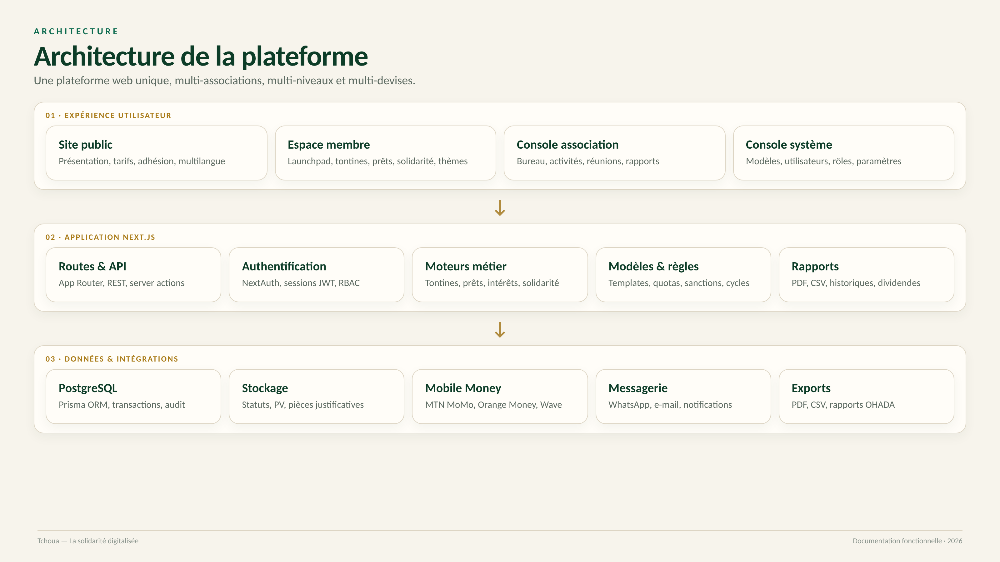
2.3 Modèle de données
Le modèle est volontairement centré sur l'association. Un utilisateur peut appartenir à plusieurs associations avec des rôles différents. Une association possède des activités ; chaque activité possède des sessions, des cotisations, des bénéficiaires, des prêts et des remboursements. Les documents et les articles de règlement sont rattachés à l'association.
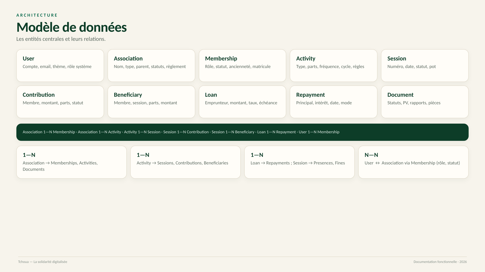
2.4 Sécurité
- Authentification — mots de passe hachés (bcrypt), sessions JWT signées, cookie __Secure-next-auth.session-token, expiration et renouvellement.
- Autorisation — contrôle à deux niveaux : appartenance à l'association (membership) et rôle (membre, bureau, administrateur système). Les routes sensibles utilisent une garde commune.
- Moindre privilège — un membre simple ne voit que ses opérations ; le bureau voit l'ensemble ; l'administrateur système ne se substitue pas au bureau pour les décisions métier.
- Audit — les actions d'administration et les changements de statut sont journalisés avec auteur, date et motif. Les mouvements financiers ne sont jamais supprimés : les corrections créent des mouvements inverses.
- Transport — HTTPS obligatoire, redirection HTTP → HTTPS, certificats Let's Encrypt renouvelés automatiquement.
- Fichiers — types et tailles contrôlés (PDF, JPEG, PNG, WebP ; 10 Mo), accès selon le rôle.
Les identifiants, secrets de session, clés d'API et mots de passe ne doivent jamais être affichés dans l'interface, les captures ou les documents. Les comptes de démonstration sont désactivés en production.
2.5 Multi-associations et hiérarchie
Chaque association est un espace étanche : ses membres, ses activités, ses caisses, ses documents et ses rapports. Une association peut avoir un parent (fédération, amicale nationale) et des enfants (sections). Les rôles sont évalués au niveau de l'association concernée ; un membre peut être simple dans une section et membre du bureau national.
Cette architecture permet de servir aussi bien une tontine de quartier de dix membres qu'une fédération nationale de plusieurs milliers de membres, sans changer de code ni de base.
2.6 Exploitation et continuité
La production est supervisée : processus PM2, reverse proxy HAProxy, certificats TLS, sauvegardes de base et journalisation. Les déploiements sont automatisés par un script qui aligne le dépôt, régénère le client Prisma, construit l'application et redémarre le processus. Les migrations SQL sont idempotentes et appliquées avant le redémarrage.
| Risque | Mesure |
|---|---|
| Indisponibilité du processus | PM2 relance automatiquement ; health-check sur les pages clés |
| Perte de données | Sauvegardes PostgreSQL, exports réguliers, journal d'audit |
| Fuite d'accès | Contrôle de session, rôles, cookies sécurisés, HTTPS |
| Erreur de déploiement | Build vérifié, redémarrage contrôlé, retour arrière par commit |
| Fichier malveillant | Types autorisés, taille limitée, stockage hors code |
Comptes, rôles et permissions
La confiance repose sur une règle simple : chacun voit ce qui le concerne, le bureau voit ce qu'il administre, l'administrateur système voit la plateforme — jamais les décisions métier à la place du bureau.
3.1 Deux familles de rôles
Tchoua distingue les rôles d'association (président, trésorier, secrétaire, membre, etc.) des rôles système (administrateur principal, opérateur, auditeur). Un utilisateur peut cumuler un rôle d'association et un rôle système, mais les deux périmètres restent séparés.
3.2 Rôles d'association
| Rôle | Périmètre | Actions typiques |
|---|---|---|
| Fondateur | Création de l'association | Paramétrage initial, désignation du bureau, publication |
| Président | Association entière | Convoquer, arbitrer, valider, représenter, clôturer |
| Vice-président | Association entière | Suppléance, délégations, contrôle |
| Secrétaire général | Adhésions, réunions, documents | PV, convocations, dossiers, archives |
| Secrétaire adjoint | Adhésions, cotisations, amendes | Saisie, suivi, bons d'encaissement |
| Trésorier | Caisses, banques, rapports | Encaissements, décaissements, rapprochements |
| Trésorier adjoint | Suppléance trésorerie | Contrôle, saisie, remplacement |
| Commissaire aux comptes | Contrôle | Audit des mouvements, rapports trimestriels et annuels |
| Censeur | Discipline | Application des sanctions, tenue du registre |
| Conseiller | Consultatif | Avis, commissions, médiation |
| Membre | Ses données | Consulter, cotiser, demander, voter |
Tableau 3.1 — Rôles disponibles dans une association. Les libellés et les pouvoirs sont configurables ; les rôles personnalisés peuvent être créés et combinés à un rôle de base.
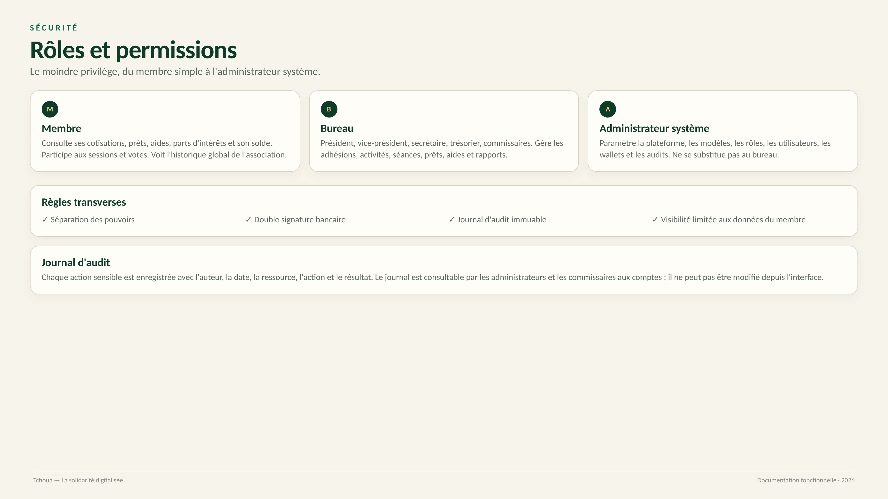
3.3 Matrice de visibilité
| Donnée | Membre | Bureau | Admin système |
|---|---|---|---|
| Profil et coordonnées | Les siennes | Toutes | Compte système |
| Cotisations | Les siennes | Toutes | Selon rôle |
| Prêts et remboursements | Les siens | Tous | Selon rôle |
| Parts d'intérêts | Les siennes | Toutes | Selon rôle |
| Aides sociales | Les siennes | Toutes | Selon rôle |
| Historique global | Consultation | Complet | Complet |
| Paramètres de l'association | Lecture | Édition | Supervision |
| Rôles système et modèles | Non | Non | Oui |
3.4 Cycle de vie d'un compte
- Inscription — nom, e-mail, mot de passe, acceptation des conditions ; ou invitation par le bureau.
- Vérification — le compte est actif après validation de l'e-mail ou activation par un administrateur.
- Adhésion — le membre rejoint une association via un code, une invitation ou une demande validée par le bureau.
- Activation — le bureau attribue le rôle et le matricule ; la date d'adhésion est enregistrée.
- Vie du compte — cotisations, prêts, aides, votes, documents, notifications.
- Sortie — démission, radiation ou décès ; le statut passe à LEFT, les droits sont calculés et l'historique est conservé.
Un membre peut appartenir à plusieurs associations avec des rôles différents. Son tableau de bord agrège ses engagements, mais chaque association conserve sa comptabilité et ses règles.
3.5 Paramétrage du profil
Chaque utilisateur gère son profil, son mot de passe, sa langue, son thème d'espace membre et ses notifications. Les préférences d'apparence sont enregistrées côté serveur et appliquées dès le chargement, sans clignotement.
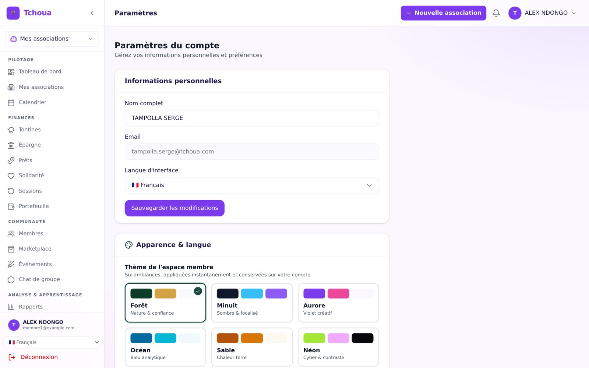
3.6 Bonnes pratiques
- Un compte par personne, jamais de compte partagé.
- Le bureau ne communique jamais son mot de passe ; les droits se donnent par rôle.
- Les fonctions sensibles (validation d'adhésion, décaissement, clôture) sont tracées avec l'auteur.
- Les comptes inactifs ou sortants sont désactivés, pas supprimés, pour préserver l'historique.
- Les administrateurs système sont peu nombreux et leurs actions sont auditées.
Cycle de vie d'une association
Créer une association ne se résume pas à saisir un nom. Il faut définir son identité, son rattachement, son bureau, ses conditions d'adhésion, ses réunions, ses aides, ses sanctions et son règlement — puis la faire vivre.
4.1 Les six étapes
1. Création
Le créateur renseigne le nom, le type (amicale, section, fédération, tontine, coopérative, mutuelle…), la région, la couleur, le logo, la description, l'association parente éventuelle et le modèle de départ. Un code d'invitation unique est généré.
2. Configuration
Le bureau paramètre le fonctionnement : organes, quorums, majorités, mandats, conditions d'adhésion, droit d'adhésion, cotisation annuelle, périodicité des réunions, catalogue d'aides, sanctions, comptes bancaires. Ces paramètres sont stockés en JSON et restent modifiables.
3. Adhésion
Les candidats remplissent une demande, fournissent leurs informations et sont parrainés si la règle l'exige. Le bureau valide ou refuse ; l'activation renseigne la date d'adhésion, le matricule et le rôle.
4. Activités
L'association crée ses activités : tontine rotative, tontine ASCA, tontine aux enchères, épargne, investissement, caisse de prêts, fonds de solidarité, collation, achats groupés, contributions en nature.
5. Sessions
Chaque activité planifie ses sessions selon sa fréquence. Les membres cotisent, les présences sont enregistrées, les amendes sont appliquées, les bénéficiaires sont désignés, les prêts sont décaissés et remboursés.
6. Clôture
En fin de cycle, l'association produit son bilan, calcule les dividendes, archive les documents et passe en lecture seule. Un nouveau cycle peut être créé sans effacer l'historique.
4.2 Statuts et transitions
| Statut | Signification | Transitions autorisées |
|---|---|---|
| BROUILLON | Configuration en cours, non visible | ACTIVE, DISSOLVED |
| EN ATTENTE | Demande de validation | ACTIVE, BROUILLON |
| ACTIVE | Fonctionnement normal | SUSPENDED, DISSOLVED |
| SUSPENDUE | Activités gelées, consultation possible | ACTIVE, DISSOLVED |
| DISSOLUE | Fin de vie, lecture seule | — |
Tableau 4.1 — Chaque transition est journalisée avec auteur, date et motif (événement de cycle de vie).
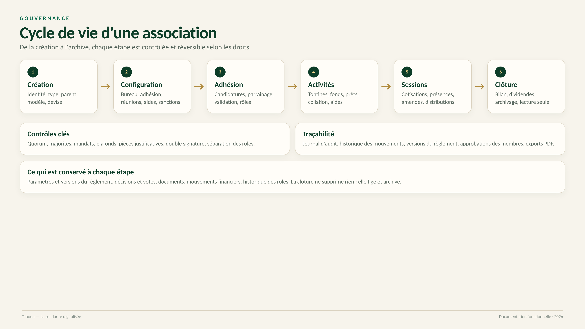
4.3 Gouvernance à deux niveaux
Le modèle FEV / SLD montre la puissance de la hiérarchie : l'FEV est une amicale nationale avec assemblée générale, comité directeur, bureau exécutif, commissions et sections. L'SLD est la section de Douala, dotée de son propre comité, de son règlement et de ses fonds.
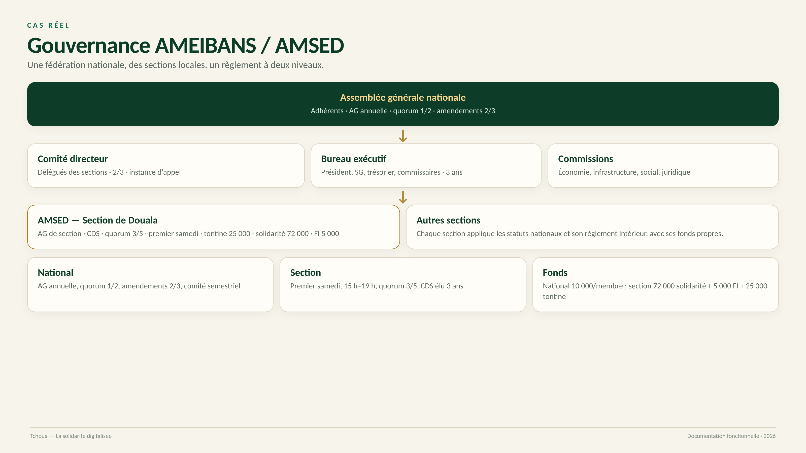
Chaque niveau possède ses règles : l'AG nationale se réunit une fois par an avec un quorum de la moitié des adhérents ; le comité directeur décide à la 2/3 ; la section de Douala se réunit le premier samedi après le 5, avec un quorum de 3/5. Tchoua stocke ces paramètres et les restitue dans les écrans de gouvernance.
4.4 Statuts, règlement et documents
Les statuts et le règlement intérieur sont structurés en articles numérotés, consultables et approuvables par les membres. Les documents originaux (PDF, DOCX) sont téléchargeables depuis la fiche de l'association. Les versions sont conservées et les modifications sont tracées.
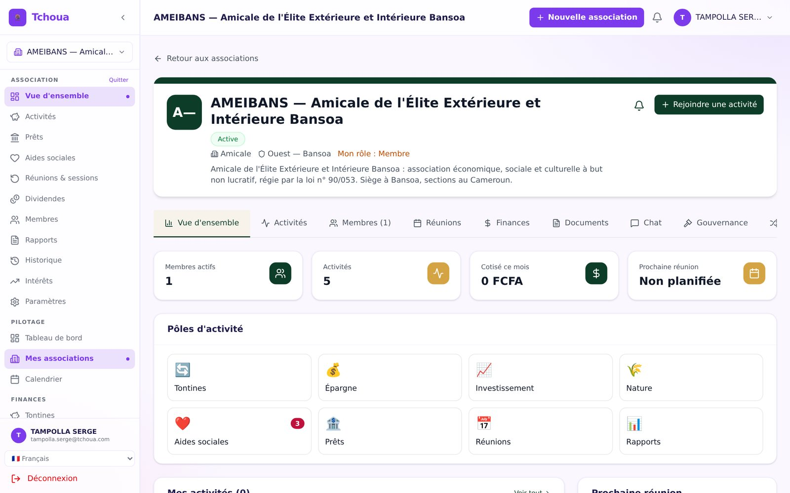
4.5 Cas particuliers
- Section sans personnalité juridique — elle hérite des statuts de la mère et gère ses fonds propres. Tchoua la modélise comme une association enfant.
- Fédération — elle regroupe des associations autonomes ; la consolidation des effectifs et des fonds est décrite comme évolution.
- Association en sommeil — statut SUSPENDUE, consultation possible, écritures gelées.
- Dissolution — les biens restants sont affectés selon les statuts ; l'historique reste consultable.
On ne supprime jamais une association qui a des mouvements : on la clôture. L'historique est la mémoire de l'association et la preuve de sa transparence.
Panorama des modules
Huit domaines couvrent l'ensemble du cycle de vie d'une association. Ils partagent le même modèle de données et la même journalisation, ce qui évite les ressaisies et les incohérences.
5.1 Description des modules
| Module | Fonctions | Écrans principaux |
|---|---|---|
| Associations & sections | Création, identité, hiérarchie, statuts, règlement, documents, cycle de vie | Mes associations, fiche association, paramètres, gouvernance |
| Adhésion & membres | Demandes, parrainage, validation, rôles, matricules, radiations, annuaire | Membres, demandes, fiche membre |
| Tontines & activités | Types d'activité, parts, fractions, cycles, enchères, bénéficiaires, soldes | Activités, cycle, sessions, tontines |
| Cotisations & sessions | Appels, encaissements, statuts, retards, présences, amendes, collation | Sessions, cotisations, réunions |
| Prêts & intérêts | Demandes, garanties, approbation, décaissement, remboursements, répartition | Prêts, fiche prêt, intérêts |
| Solidarité & aides | Catalogue, plafonds, demandes, validation, décaissement, suivi | Solidarité, aides sociales |
| Comptabilité & rapports | Caisses, journaux, bilans, exports PDF/CSV, dividendes, audit | Rapports, dividendes, historique |
| Administration & modèles | Modèles, utilisateurs système, rôles, paramètres, maintenance | Console système |
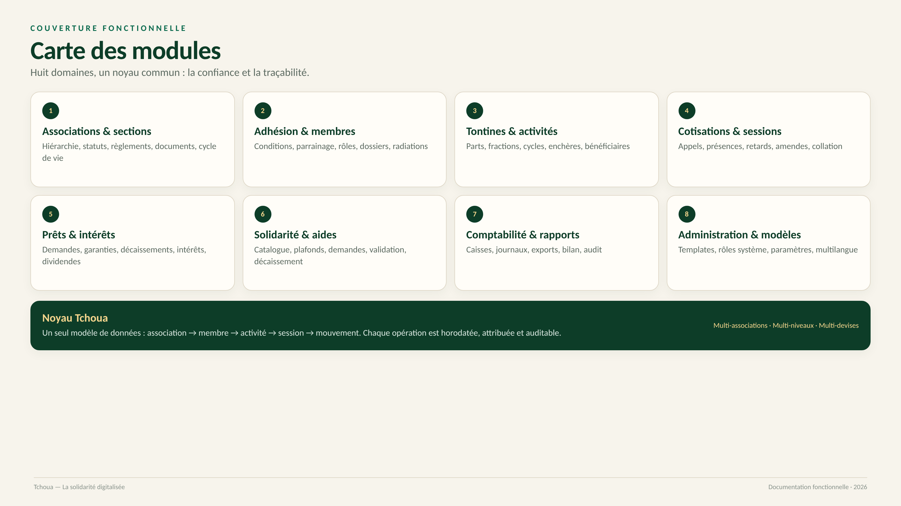
5.2 Navigation de l'espace membre
La navigation latérale est groupée par intention : Pilotage (tableau de bord, associations, calendrier), Finances (tontines, épargne, prêts, solidarité, sessions, portefeuille), Communauté (membres, marketplace, événements, chat), Analyse & apprentissage (rapports, conseils IA, gamification, académie). La section contextuelle de l'association ajoute vue d'ensemble, activités, prêts, aides, réunions, dividendes, membres, rapports, historique, intérêts et paramètres.
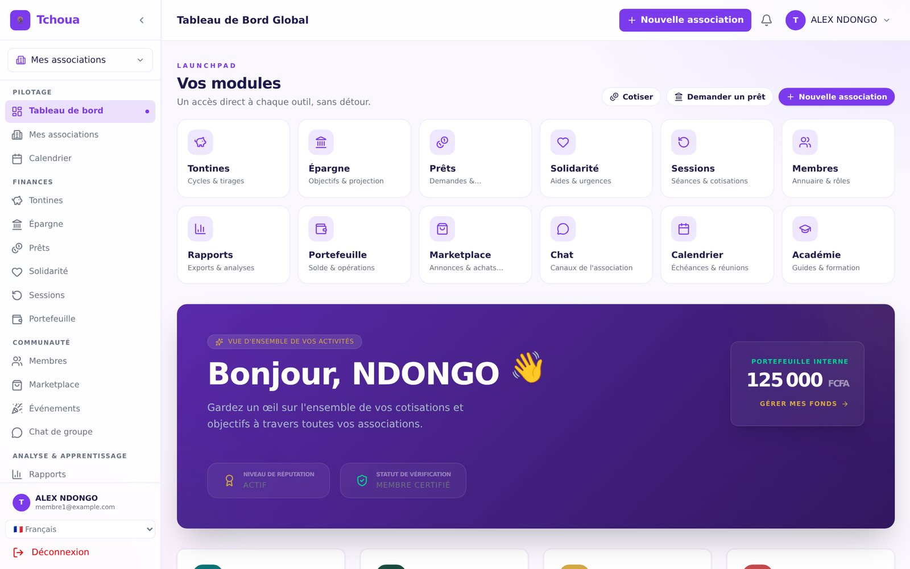
5.3 Launchpad
Le launchpad est un accès direct aux douze modules les plus utilisés : tontines, épargne, prêts, solidarité, sessions, membres, rapports, portefeuille, marketplace, chat, académie, événements. Il réduit le nombre de clics et rend l'espace membre utilisable sur mobile.
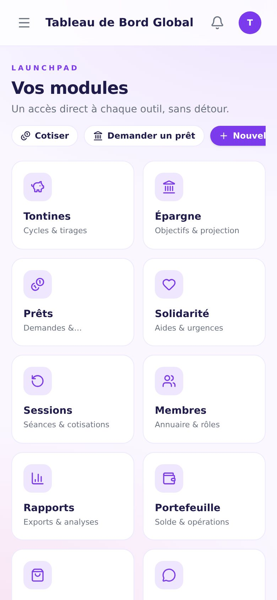
5.4 Interactions entre modules
- Une adhésion validée crée le membre, son rôle et son matricule ; elle alimente les appels de cotisation.
- Une session génère les cotisations attendues, les présences, les amendes et la collation.
- Une tontine consomme les cotisations, calcule le pot, désigne les bénéficiaires et produit un solde de cycle.
- Un prêt débite la caisse, génère un échéancier et des intérêts ; les remboursements alimentent l'historique et les dividendes.
- Une aide débite le fonds de solidarité et crée une demande traçable.
- Les rapports agrègent tous les mouvements ; l'historique les restitue au niveau membre, activité ou association.
Chaque module peut être activé ou désactivé par association selon sa configuration. Une tontine pure n'a pas besoin du module prêts ; une amicale nationale utilisera surtout adhésion, solidarité, réunions et rapports.
5.5 Principes communs
Tous les modules partagent quatre garanties : la même identité de membre, la même horloge, la même devise et le même journal. Une opération saisie dans un module est immédiatement visible dans les autres, sans synchronisation manuelle.
| Garantie | Effet concret |
|---|---|
| Identité unique | Un membre, un compte, un matricule par association |
| Horodatage | Chaque mouvement porte une date, un auteur et une référence |
| Devise unique | Les montants sont stockés en valeur et affichés dans la devise de l'association |
| Journal partagé | Les rapports et l'historique agrègent tous les modules |
Activités et moteur de tontine
La tontine est le cœur historique de Tchoua. Le moteur va bien au-delà du tour de rôle : parts, fractions, sessions, pot, enchères, bénéficiaires multiples, cycles fixes ou épuisement des parts, solde et clôture.
6.1 Définitions
| Terme | Définition |
|---|---|
| Part | Unité de participation ; une part complète vaut le montant défini par l'activité. |
| Fraction | 1, 1/2 ou 1/4 de part selon la configuration et l'autorisation des fractions. |
| Souscription | Engagement d'un membre à verser un nombre de parts à chaque session. |
| Cotisation | Versement effectif pour une session, égal aux parts souscrites × montant de la part. |
| Pot | Somme des cotisations encaissées de la session, augmentée du report et des ajustements. |
| Part bénéficiaire | Part attribuée à un bénéficiaire ; elle donne droit au montant par part bénéficiaire. |
| Session | Rencontre datée durant laquelle on cotise et on distribue. |
| Cycle | Période complète entre l'ouverture et la clôture de l'activité. |
6.2 Types d'activités
| Type | Principe | Usage typique |
|---|---|---|
| Tontine rotative | Chaque membre reçoit le pot à tour de rôle | Groupe de quartier, famille, amis |
| Tontine ASCA | Épargne et crédit internes, prêts avec intérêts | Coopérative, groupe de femmes |
| Tontine aux enchères | Le pot est attribué au plus offrant ; la décote alimente les intérêts | SLD, tontines d'élites |
| Épargne / investissement | Cotisations capitalisées, intérêts ou dividendes | Fonds d'investissement, projets |
| Prêt | Caisse de prêts aux membres | HORIZON, caisse de section |
| Solidarité | Cotisations et aides non remboursables | Amicales, mutuelles |
| Collation | Participation aux frais de réception | Réunions statutaires |
| Nature | Contributions en produits, converties en valeur | Coopératives agricoles |
| Achats groupés | Commandes collectives | Groupements, tontines de consommation |
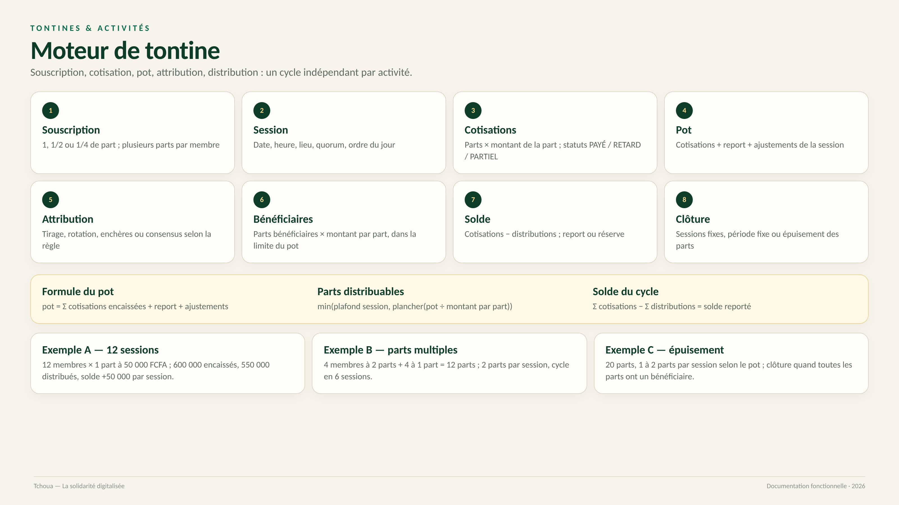
6.3 Souscription et parts
Un membre actif souscrit entre la fraction minimale et le plafond éventuel. Sa cotisation attendue à chaque session est le produit de ses parts par le montant de la part. S'il souscrit plusieurs parts, sa cotisation est multipliée d'autant ; son droit bénéficiaire suit la même proportion.
droit bénéficiaire = parts bénéficiaires × montant par part bénéficiaire
| Paramètre | Effet | Exemple |
|---|---|---|
| Montant de la part | Base de la cotisation | 25 000 FCFA |
| Fraction minimale | 1, 1/2 ou 1/4 | Demi-part = 12 500 FCFA |
| Parts max par membre | Plafonne l'engagement | 4 parts maximum |
| Montant par part bénéficiaire | Ce que reçoit un bénéficiaire | 300 000 FCFA |
| Parts bénéficiaires max / session | Plafonne la distribution | 2 parts par session |
| Même bénéficiaire plusieurs fois | Autorise le cumul | Oui / non |
6.4 Le pot et les parts distribuables
Le pot d'une session est la somme des cotisations encaissées, du report éventuel et des ajustements validés. Le nombre de parts distribuables est le plus petit des deux nombres suivants : le plafond de parts par session, et le nombre de parts que le pot peut financer.
parts distribuables = min(plafond session, plancher(pot ÷ montant par part))
solde du cycle = Σ cotisations − Σ distributions
Si le pot est insuffisant, la distribution peut être bloquée, partielle ou reportée selon la règle de l'activité. Aucune distribution ne doit rendre le solde négatif sans autorisation explicite d'avance de caisse.
6.5 Les trois modes de cycle
| Mode | Fin du cycle | Conséquence |
|---|---|---|
| Sessions fixes | Après N sessions (ex. 12 mensuelles) | Si des parts restent, elles sont reportées ou remboursées selon la règle |
| Période fixe | À la date de fin | Le nombre de sessions dépend de la fréquence |
| Épuisement des parts | Quand toutes les parts souscrites ont un bénéficiaire | Le nombre de sessions varie ; les parts par session peuvent augmenter avec le pot |
La progression est calculée différemment selon le mode : sessions tenues / sessions prévues pour un cycle à nombre fixe, parts distribuées / parts souscrites pour un cycle à épuisement.
6.6 Attribution des bénéficiaires
| Mode | Règle | Contrôle |
|---|---|---|
| Rotation | Ordre figé des membres | Un membre ne passe qu'une fois par tour |
| Tirage mensuel | Tirage aléatoire parmi les éligibles | Exclusion des déjà bénéficiaires si la règle l'impose |
| Tirage unique | Calendrier complet établi à l'avance | Vérification des parts restantes |
| Enchères | Le pot va au plus offrant ; la décote alimente les intérêts | Mise à prix minimum, nombre d'enchérisseurs |
| Mérite / besoins | Le bureau désigne avec justification | Traçabilité de la décision |
| Hybride | Combinaison de règles | Paramétrage explicite |
L'éligibilité d'un bénéficiaire tient compte de son statut actif, de ses cotisations à jour, de ses parts restantes et de ses éventuelles réceptions antérieures. Un membre peut recevoir plusieurs parts sur une même session si l'activité l'autorise et dans la limite du plafond.
6.7 Enchères à l'SLD
L'SLD applique une tontine annuelle de 25 000 FCFA et ses multiples, attribuée par enchères publiques avec une mise à prix de 5 % du taux de cotisation. Le membre qui remporte l'enchère reçoit le pot diminué de la décote ; les intérêts générés sont répartis en lots ou reportés. Les défaillants subissent une majoration de 15 % s'ils n'ont pas encore bénéficié et de 20 % s'ils ont déjà bénéficié.
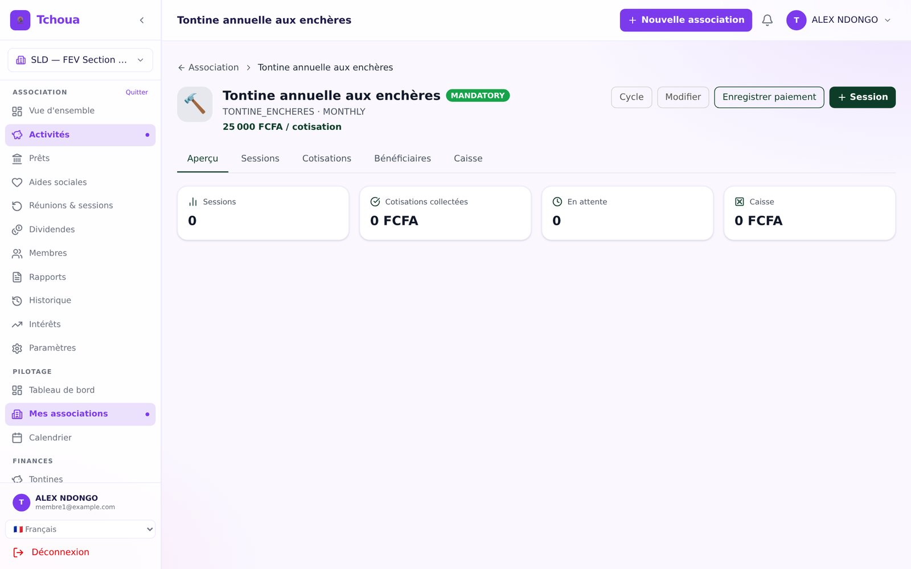
6.8 Exemples chiffrés
Exemple A — 12 sessions, 1 part, 12 membres
Part à 50 000 FCFA, montant par part bénéficiaire 550 000 FCFA, un bénéficiaire par session. Chaque session encaisse 12 × 50 000 = 600 000 FCFA, distribue 550 000 FCFA et laisse un solde de 50 000 FCFA. Après 12 sessions, les 12 membres ont bénéficié et le solde cumulé est de 600 000 FCFA.
Exemple B — parts multiples
Quatre membres à 2 parts et quatre membres à 1 part représentent 12 parts. Avec deux parts bénéficiaires par session, le cycle se termine en six sessions.
Exemple C — épuisement des parts
20 parts, une part distribuable par session, pot variable. La session 1 distribue une part, la session 2 peut en distribuer deux si le pot le permet ; le cycle s'arrête lorsque les 20 parts ont un bénéficiaire.
Exemple D — demi-part
Part à 100 000 FCFA, membre à 0,5 part : cotisation de 50 000 FCFA et droit bénéficiaire de 0,5 × le montant par part.
6.9 Cycle réel et solde
L'écran de cycle restitue les cotisations, les distributions, le solde, les parts souscrites et distribuées, la progression et la situation par membre. La figure suivante montre un cycle de démonstration à quatre membres et deux sessions : 800 000 FCFA cotisés, 800 000 FCFA distribués, solde nul, deux parts distribuées sur quatre.
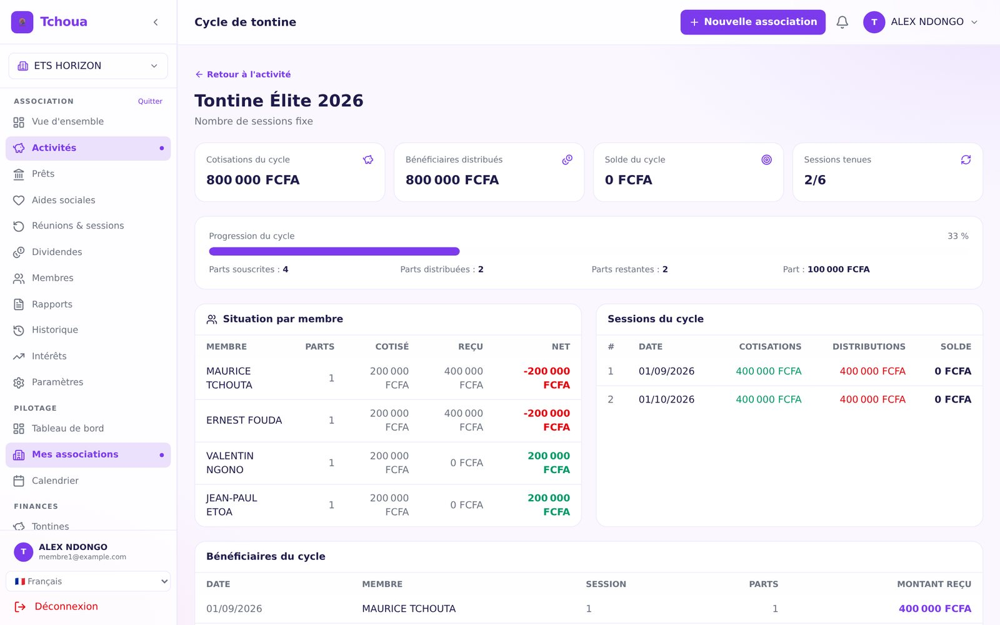
6.10 Cas limites et règles de gestion
| Cas | Comportement attendu |
|---|---|
| Membre absent | Cotisation due ; amende selon le règlement ; éligibilité suspendue si la règle l'exige |
| Cotisation partielle | Statut PARTIEL ; reliquat dû ; part bénéficiaire réduite au prorata si configuré |
| Cotisation en retard | Statut LATE ; pénalité ; classement des défaillants en dernier |
| Pot insuffisant | Blocage, distribution partielle ou report selon la règle |
| Pot excédentaire | Report, part supplémentaire dans la limite du plafond, ou caisse |
| Membre sortant | Cotisations acquises ; parts non reçues recalculées ou remboursées |
| Double distribution | Interdite : unicité (session, membre, rang de part) |
| Changement de part en cours de cycle | Interdit sauf avenant avec date d'effet |
| Clôture anticipée | Autorisée si la règle le permet ; parts restantes traitées selon la règle |
6.11 Paramétrage dans l'interface
Le formulaire d'activité permet de définir le type, le montant de la part, la fréquence, le mode d'attribution, le montant par part bénéficiaire, la fraction minimale, les plafonds, l'autorisation des fractions et le mode de cycle. Les paramètres avancés (règle de surplus, tolérance de retard, clôture anticipée) sont stockés dans la configuration de cycle et documentés dans la spécification tontine.
6.12 Autres activités
Le moteur ne se limite pas aux tontines financières. Les activités complémentaires utilisent les mêmes sessions, cotisations et rapports, avec des règles adaptées.
| Activité | Principe | Points de contrôle |
|---|---|---|
| Épargne | Cotisations régulières capitalisées, retrait selon conditions | Solde, plafond, préavis, intérêts |
| Investissement | Fonds commun pour projets ou prêts productifs | Parts, projet, rentabilité, dividende |
| Nature | Produits agricoles ou matériaux valorisés | Unité, qualité, conversion, stockage |
| Achats groupés | Commande collective, répartition au prorata | Devis, livraison, qualité, paiement |
| Collation | Cotisation de séance et forfait au récipiendaire | Taux, arriérés, remise, journal |
| Services / temps | Banque de temps, échange de compétences | Heures, valorisation, évaluation |
Chaque activité conserve sa caisse, sa fréquence et ses règles. Une association peut ainsi combiner une tontine, un fonds d'investissement, une caisse de prêts et une caisse de collation sans mélanger les flux.
Le moteur calcule et expose les soldes, les parts et les distributions. La désignation automatique des bénéficiaires selon l'éligibilité et les enchères reste un workflow à finaliser ; le paramétrage et le calcul sont opérationnels.
Cotisations, sessions et présences
La session est l'unité de temps de la vie associative : on s'y retrouve, on cotise, on contrôle les présences, on applique les amendes, on sert la collation et l'on décide.
7.1 Anatomie d'une session
| Élément | Description |
|---|---|
| Numéro | Séquence dans le cycle de l'activité |
| Date et heure | Date planifiée, début et fin réels |
| Lieu | Siège, domicile d'un membre, foyer, salle louée |
| Type | Ordinaire, extraordinaire, AG, réunion de bureau |
| Quorum | Nombre ou pourcentage requis pour délibérer |
| Ordre du jour | Points à traiter, documents joints |
| Présences | Présent, retard, absent, excusé |
| Cotisations | Montants attendus et encaissés par membre |
| Amendes | Sanctions appliquées selon le règlement |
| Décisions | Résolutions, votes, responsables, échéances |
7.2 Cycle de vie d'une cotisation
- Appel — la session ouverte génère les cotisations attendues à partir des parts souscrites.
- Encaissement — le trésorier saisit le montant, le mode (espèces, Mobile Money, virement, nature) et la référence.
- Statut — PAYÉ, PARTIEL, EN RETARD, EXONÉRÉ. Le statut conditionne l'éligibilité et les relances.
- Rapprochement — le montant est affecté à la caisse de l'activité et au pot de la session.
- Relance — les impayés déclenchent une notification et, si configuré, une amende.
- Clôture — la session est figée ; les corrections ultérieures créent un ajustement.
encaissé = Σ paiements validés
reste dû = attendu − encaissé
7.3 Statuts et conséquences
| Statut | Définition | Conséquence |
|---|---|---|
| PAID | Montant intégral encaissé | Éligibilité conservée ; part bénéficiaire pleine |
| PARTIAL | Encaissement incomplet | Reste dû ; éligibilité réduite si configuré |
| LATE | Échéance dépassée | Pénalité ; relance ; classement des défaillants |
| EXEMPT | Dispense (membre spécial, décision AG) | Pas de pénalité ; droits conservés |
| CANCELLED | Session annulée ou erreur | Mouvement inverse, pas de suppression |
7.4 Présences et amendes
Les présences sont enregistrées pour chaque session. Le règlement de l'SLD fournit un barème complet : retard 500 FCFA, absence 1 000 FCFA, deux absences consécutives 3 000 FCFA, trois absences 5 000 FCFA, départ avant 19 h 500 FCFA, bavardage 500 FCFA, indiscipline 3 000 FCFA, engagement non mandaté 10 000 FCFA, commission manquée 5 000 FCFA, absence à l'AG nationale 20 000 FCFA, absence aux obsèques 25 000 FCFA.
| Manquement | Sanction SLD | Effet Tchoua |
|---|---|---|
| Retard | 500 FCFA | Amende rattachée à la session |
| Absence simple | 1 000 FCFA | Amende + statut ABSENT |
| Deux absences consécutives | 3 000 FCFA | Amende cumulative |
| Trois absences consécutives | 5 000 FCFA | Avertissement automatique |
| Départ anticipé | 500 FCFA | Statut PARTI_TOT |
| Indiscipline | 3 000 FCFA | Amende + rapport au censeur |
| Commission manquée | 5 000 FCFA | Amende + suivi de mission |
| Absence AG nationale | 20 000 FCFA | Amende exceptionnelle |
Tableau 7.1 — Barème SLD. Tous les montants sont paramétrables ; aucune valeur n'est codée en dur.
7.5 Collation
La collation est une caisse de réception : chaque membre cotise un montant fixe par séance, et le membre qui reçoit la réunion perçoit un forfait, déduction faite de ses arriérés. À l'SLD, la cotisation est de 3 000 FCFA et le forfait de 150 000 FCFA.
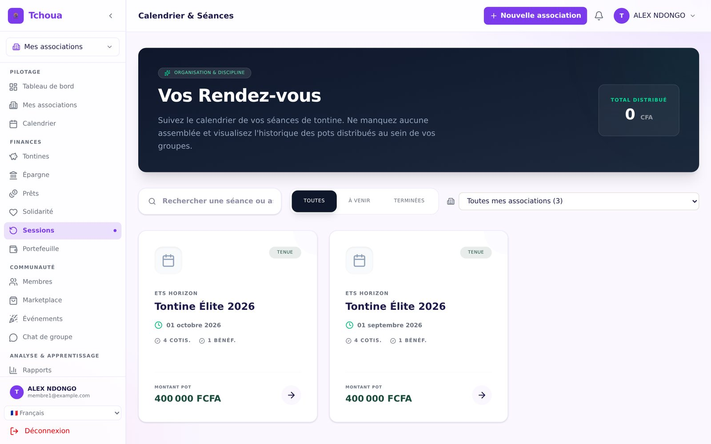
7.6 Activités et appels de cotisation
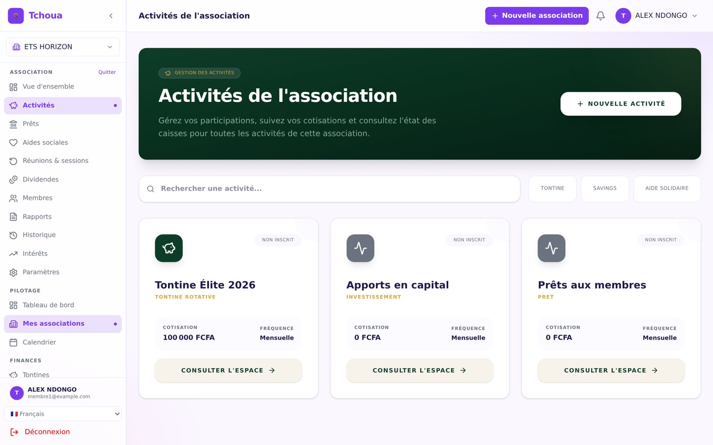
Chaque carte d'activité affiche le montant de la cotisation, la fréquence, la caisse disponible, le nombre d'abonnés et les actions (consulter, cotiser, gérer). Les activités obligatoires apparaissent dans l'espace membre avec le montant attendu et l'échéance.
7.7 Relances et automatisation
Un traitement planifié identifie les cotisations en retard, les échéances de prêt et les sessions à venir, puis envoie des notifications. Le traitement peut être exécuté en mode simulation pour vérifier les destinataires avant l'envoi réel. Les relances sont historisées pour éviter les doublons.
Les canaux de notification (e-mail, WhatsApp, SMS) sont configurés par la plateforme. Le contenu et la langue suivent les préférences du membre.
7.8 Bonnes pratiques de trésorerie
- Saisir les cotisations le jour même, jamais en fin de mois.
- Joindre la référence Mobile Money ou le reçu pour chaque paiement.
- Faire valider les corrections par une deuxième personne.
- Clôturer la session avant d'ouvrir la suivante.
- Exporter le journal de caisse à chaque fin de mois.
- Rapprocher le solde Tchoua et le solde bancaire avant l'AG.
7.9 Contrôles de clôture de session
La clôture d'une session est un point de contrôle, pas une formalité. Elle vérifie que les encaissements, les présences, les amendes et la collation sont cohérents avant de figer le pot et de produire le procès-verbal.
| Contrôle | Question à se poser | Trace |
|---|---|---|
| Caisse | Le solde correspond-il aux espèces, au Mobile Money et à la banque ? | Journal de caisse |
| Impayés | Toutes les cotisations attendues sont-elles payées, partielles ou documentées ? | Liste des statuts |
| Amendes | Les retards, absences et manquements sont-ils qualifiés et chiffrés ? | Registre du censeur |
| Collation | Le forfait du récipiendaire est-il calculé après déduction des arriérés ? | Reçu et journal |
| Procès-verbal | Les décisions, votes et responsables sont-ils consignés ? | PV signé |
Une session clôturée n'est plus modifiable directement : toute correction ultérieure crée un ajustement visible dans l'historique et le rapport.
Prêts, remboursements et intérêts
Le module prêts transforme l'épargne collective en crédit maîtrisé : demande, instruction, garanties, décaissement, échéancier, remboursements et répartition transparente des intérêts.
8.1 Types de prêts
| Type | Source | Règles typiques |
|---|---|---|
| Prêt au membre | Caisse de l'activité | Taux mensuel, durée, plafond par membre, garanties |
| Prêt exceptionnel | Fonds d'investissement | Commission, conditions spécifiques, information de l'AG |
| Prêt maladie | Fonds de solidarité | Sans intérêt, plafonné, remboursement après hospitalisation |
| Avance de caisse | Trésorerie | Courte durée, validation du bureau |
8.2 Règles de prêt
- Plafond — montant fixe, pourcentage de la caisse ou multiple de la mise du membre.
- Taux — taux mensuel, éventuellement dégressif après quelques mois.
- Durée — nombre de mois et échéancier.
- Garanties — épargne, caution, avaliste, chèque, reconnaissance de dette.
- Approbation — bureau, secrétariat ou automatique selon le montant et le paramétrage.
- Prêts actifs simultanés — nombre maximal par membre.
- Retards — pénalité, majoration, suspension, recouvrement.
échéance = principal ÷ durée + intérêts de la période
plafond = min(caisse disponible, plafond membre, multiple de la mise)
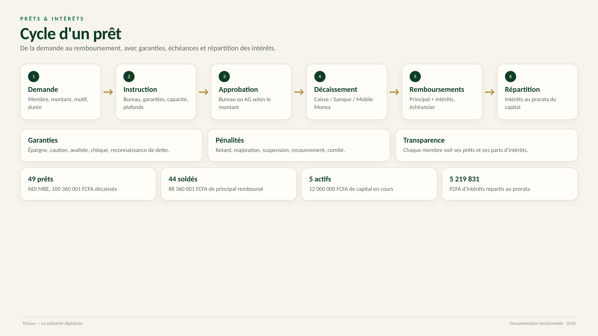
8.3 Cycle d'un prêt
- Le membre crée une demande : montant, motif, durée, garanties proposées.
- Le bureau instruit : vérification de la caisse, du plafond, des prêts actifs et de la capacité de remboursement.
- La demande est approuvée ou refusée avec motif ; la décision est notifiée.
- Le décaissement est enregistré (espèces, Mobile Money, virement) et la caisse est débitée.
- Les remboursements sont saisis avec principal et intérêt séparés.
- Le prêt est soldé ; les intérêts alimentent la répartition et les dividendes.
8.4 Répartition des intérêts
Chaque remboursement comprend une part de principal et une part d'intérêt. L'intérêt est réparti entre les membres au prorata du capital qu'ils détenaient à la date de décaissement du prêt. Cette clé evite qu'un membre qui a rejoint après le prêt bénéficie d'intérêts qu'il n'a pas contribué à générer.
part d'intérêt = intérêt remboursé × quote-part
L'écran « Intérêts » détaille, pour chaque remboursement : la date, l'emprunteur, l'activité, l'intérêt total, le capital du membre, le capital global, la quote-part et le montant qui lui revient. Le bureau peut déplier la répartition entre tous les membres.
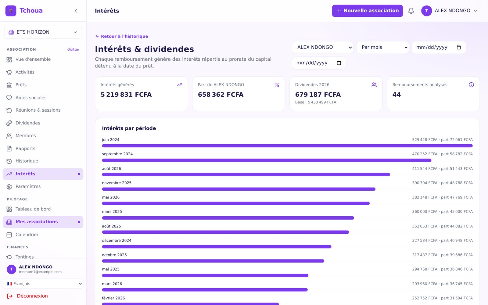
8.5 Le cas ETS HORIZON
HORIZON est une association d'investissement et de prêts de sept membres. Les données importées permettent de vérifier le module sur un volume réel : 49 prêts, 100 360 001 FCFA décaissés, 44 prêts remboursés, 5 prêts actifs pour 12 000 000 FCFA, 88 360 001 FCFA de principal remboursé et 5 219 831 FCFA d'intérêts.
| Indicateur | Valeur | Lecture |
|---|---|---|
| Membres | 7 | Un membre par compte nominatif |
| Capital / apports | 8 000 000 FCFA | Base de la répartition des intérêts |
| Prêts décaissés | 49 | 100 360 001 FCFA au total |
| Prêts soldés | 44 | 93 579 832 FCFA remboursés (principal + intérêts) |
| Prêts en cours | 5 | 12 000 000 FCFA de capital |
| Principal remboursé | 88 360 001 FCFA | Hors intérêts |
| Intérêts générés | 5 219 831 FCFA | Répartis au prorata du capital |
| Dividendes 2026 | 5 433 499 FCFA | 7 parts, base de calcul validée |
| Ratio prêts / fonds | 150 % | Paramètre propre à HORIZON |
Tableau 8.1 — Chiffres clés HORIZON issus de l'import réel et vérifiés dans l'application.
8.6 Écran des prêts
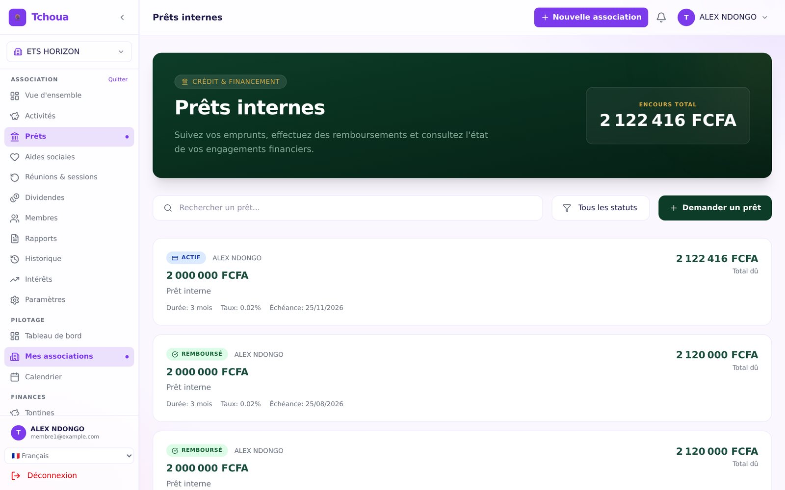
8.7 Risques et contrôles
| Risque | Contrôle |
|---|---|
| Sur-financement | Plafond par membre, ratio caisse, prêts actifs max |
| Défaut de remboursement | Garanties, échéancier, relances, pénalités |
| Double prêt | Vérification des prêts actifs |
| Détournement | Double validation, audit, rapprochement bancaire |
| Intérêts mal répartis | Clé de capital à la date du prêt, journal détaillé |
| Prêt politique | Motivation, vote, traçabilité de la décision |
Un prêt non remboursé ne doit jamais être supprimé ni masqué : il doit être passé en perte avec une décision du bureau et une écriture d'ajustement. La traçabilité prime sur l'esthétique du solde.
Solidarité et aides sociales
La solidarité est la raison d'être de nombreuses associations. Tchoua transforme l'entraide informelle en un droit lisible : un catalogue, des plafonds, une demande, une validation et un décaissement traçable.
9.1 Le catalogue d'aides
| Catégorie | Événement | Exemple de plafond |
|---|---|---|
| Santé | Hospitalisation du membre | SLD 70 000 ; FEV 10 000/jour (3–15 jours) |
| Santé | Hospitalisation du conjoint | SLD 50 000 |
| Santé | Maladie grave | Prêt sans intérêt jusqu'à 100 000 |
| Famille | Mariage (premier) | 50 000 |
| Famille | Naissance | 20 000 + 10 000 jumeaux |
| Décès | Décès du membre | SLD 900 000 ; FEV 300 000 |
| Décès | Décès du conjoint | 405 000 |
| Décès | Décès d'un enfant | 50 000 (<10 ans) / 100 000 (>10 ans) |
| Décès | Décès du père ou de la mère | 100 000 |
| Urgence | Catastrophe, incendie, sinistre | Selon budget et décision du bureau |
| Éducation | Scolarité, fournitures | Selon caisse et règlement |
Tableau 9.1 — Catalogue indicatif. Chaque association définit ses catégories, ses plafonds et ses conditions.
9.2 Workflow d'une demande
- Ouverture — le membre choisit la catégorie, décrit l'événement, joint les pièces (certificat, facture, acte).
- Contrôle — le bureau vérifie l'éligibilité, la complétude et le plafond disponible.
- Décision — approbation, refus motivé ou complément demandé.
- Décaissement — paiement au membre ou au tiers (hôpital, pompes funèbres), avec référence.
- Suivi — l'aide apparaît dans l'historique du membre et dans les rapports de l'association.
plafond disponible = plafond annuel − aides déjà versées sur la période
9.3 Écran Solidarité
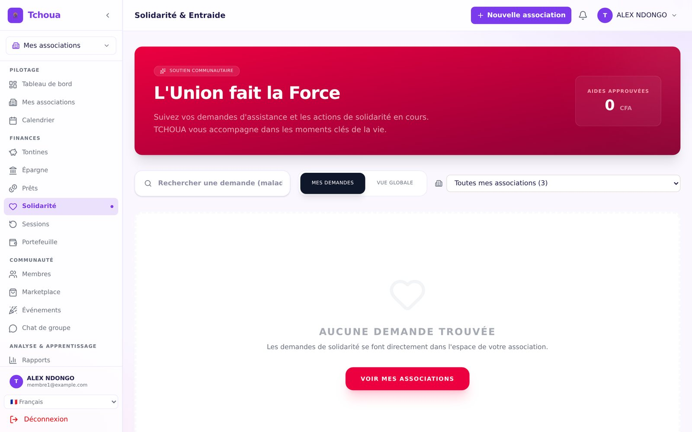
9.4 Règles SLD
Le règlement SLD précise les montants et les conditions : hospitalisation d'au moins cinq jours constatée par un membre missionné et vérifiée auprès de la formation sanitaire ; aide maladie limitée à une période d'un an ; mariage limité au premier mariage ; naissance dans un mariage ; décès du membre avec ventilation enterrement, transport, restauration, boissons et frais divers ; veillée obligatoire trois jours à Douala.
| Aide SLD | Montant | Condition |
|---|---|---|
| Hospitalisation membre | 70 000 | 5 jours minimum, contrôle |
| Hospitalisation conjoint | 50 000 | Premier conjoint déclaré |
| Maladie grave | Prêt 100 000 max | Sans intérêt, remboursement 3 mois |
| Mariage | 50 000 | Premier mariage uniquement |
| Naissance | 20 000 (+10 000 jumeaux) | Naissance dans un mariage |
| Décès membre | 900 000 | Ventilation réglementaire |
| Décès conjoint | 405 000 | Ventilation réglementaire |
| Décès enfant | 50 000 / 100 000 | Selon l'âge |
| Décès parent | 100 000 | Père ou mère |
9.5 Règles FEV
Au niveau national, l'FEV dispose d'un fonds de dépôt provisionnel de 10 000 FCFA par membre. En cas de décès, 300 000 FCFA sont prélevés : 200 000 pour la famille, 50 000 pour la gerbe de fleurs, 50 000 pour la section du défunt. L'aide maladie est de 10 000 FCFA par jour d'hospitalisation, avec un minimum de 3 jours et un maximum de 15 jours par an, sous contrôle d'une équipe de la section et certificat médical.
9.6 Contrôles et anti-abus
- Pièces justificatives obligatoires et archivées.
- Contrôle par un membre missionné pour les hospitalisations.
- Plafond annuel par membre et par catégorie.
- Une seule aide par événement, sauf décision exceptionnelle.
- Historique des aides consultable par le bureau et le commissaire aux comptes.
- Décaissement validé par au moins deux personnes pour les montants élevés.
L'aide n'est pas une faveur : c'est un droit contributif. Le membre a cotisé pour le fonds ; il doit pouvoir comprendre le montant auquel il a droit, les pièces à fournir et le délai de traitement.
Réunions, discipline et collation
La réunion est le lieu où la vie associative se décide. Tchoua en fait un objet structuré : convocation, ordre du jour, présences, quorum, votes, sanctions, procès-verbal et collation.
10.1 Types de réunions
| Type | Objet | Quorum typique |
|---|---|---|
| Réunion ordinaire | Activités courantes, cotisations, décisions | Majorité des membres |
| Réunion extraordinaire | Sujet urgent, convocation spéciale | Selon statuts |
| Assemblée générale ordinaire | Bilan, budget, élections, orientations | 1/2 des adhérents (FEV) |
| Assemblée générale extraordinaire | Modification des statuts, dissolution | 2/3 selon les cas |
| Réunion de bureau | Instruction, arbitrage, préparation | Majorité du bureau |
| Commission | Étude d'un sujet technique | Membres de la commission |
10.2 Déroulé d'une réunion
- Convocation — date, lieu, ordre du jour, documents joints, délai statutaire.
- Ouverture — vérification du quorum, désignation du président de séance et du secrétaire.
- Appel — présences, retards, absences, excuses ; amendes éventuelles.
- Lecture du PV précédent — adoption ou corrections.
- Points à l'ordre du jour — présentation, débat, vote, résolution.
- Cotisations et collation — encaissement, service, reçu.
- Clôture — prochaine date, responsables des actions, PV signé.
majorité = voix pour > voix contre (ou 2/3 selon la règle)
amende = barème selon le manquement constaté
10.3 Écran Réunions
10.4 Discipline
La discipline est traitée comme un registre, pas comme une humeur. Chaque manquement est rattaché à une session, à un membre, à un article du règlement et à un montant. Le censeur applique ; le trésorier encaisse ; le commissaire aux comptes vérifie. En cas de contestation, le membre peut demander une remise gracieuse au bureau, qui décide et motive.
| Étape | Acteur | Trace |
|---|---|---|
| Constat | Président de séance / censeur | Ligne de présence, horodatage |
| Qualification | Censeur | Motif, article du règlement |
| Sanction | Bureau | Montant, échéance, notification |
| Encaissement | Trésorier | Reçu, caisse, journal |
| Recours | Bureau / AG | Décision motivée |
10.5 Collation et réception
La collation est une contribution de chaque membre à chaque séance statutaire. Le membre qui reçoit la réunion perçoit un forfait, déduction faite de ses arriérés. À l'SLD, la cotisation est de 3 000 FCFA et le forfait de 150 000 FCFA ; le versement est remis au récipiendaire pendant la séance.
- Le taux de collation est un paramètre de l'association.
- Le forfait du récipiendaire est également paramétrable.
- Les arriérés de collation sont déduits du forfait.
- Le solde de collation est suivi dans les rapports.
10.6 Procès-verbaux et archives
Chaque réunion produit un procès-verbal : ordre du jour, présents, absents, résolutions, votes, actions et responsables. Le PV est téléversé dans les documents de l'association, avec un type dédié, et reste consultable par les membres. Les décisions peuvent être liées à des tâches et à des échéances.
Les convocations et PV peuvent être exportés en PDF. Les documents sont horodatés et rattachés à l'association ; ils ne sont jamais écrasés silencieusement.
10.7 Bonnes pratiques
- Publier l'ordre du jour au moins 15 jours avant (30 jours pour une AG).
- Vérifier le quorum avant d'ouvrir les votes.
- Faire signer le PV par le président et le secrétaire.
- Encaisser les amendes et la collation séance tenante.
- Diffuser le PV dans les 30 jours aux membres.
- Conserver les pièces justificatives avec le PV.
Comptabilité, rapports et dividendes
Une association sans rapports est une association sans preuve. Tchoua produit des états lisibles par le bureau, les commissaires aux comptes et les membres : caisses, mouvements, bilan, dividendes et exports.
11.1 Les caisses
Chaque activité possède sa caisse : tontine, solidarité, investissement, prêt, collation. Le solde est calculé à partir des mouvements validés. Les transferts entre caisses sont des opérations explicites, jamais des corrections silencieuses.
| Caisse | Alimentée par | Utilisée pour |
|---|---|---|
| Tontine | Cotisations des membres | Distribution des bénéficiaires |
| Solidarité | Cotisations, amendes, dons | Aides maladie, décès, famille |
| Investissement | Cotisations, intérêts, dividendes | Prêts, projets, réserve |
| Prêt | Remboursements, dotations | Décaissements de prêts |
| Collation | Cotisations de séance | Forfait du récipiendaire |
11.2 Le rapport d'activité
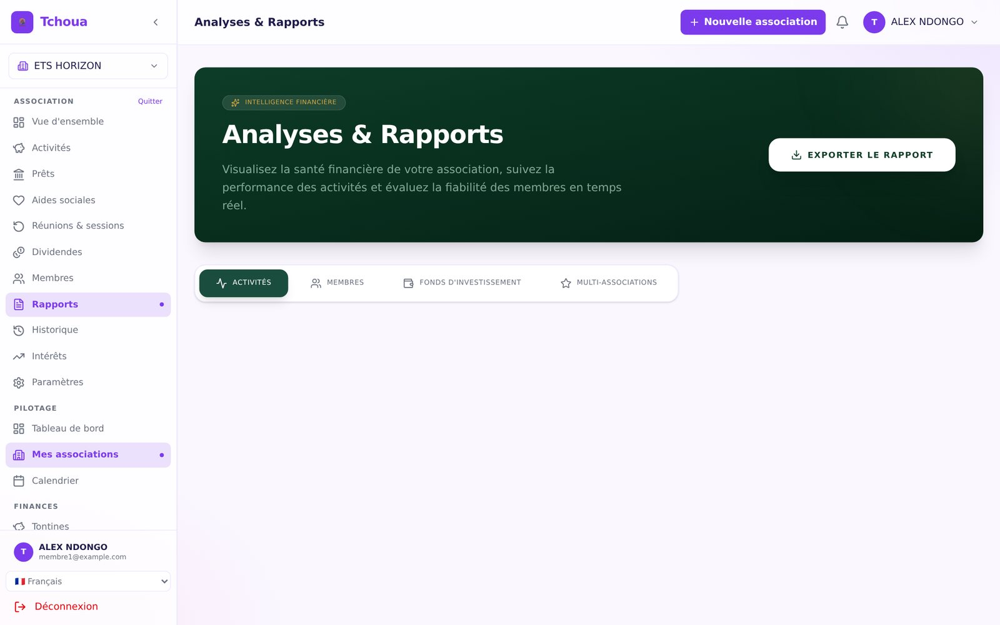
Le rapport présente les cotisations attendues et encaissées, les impayés, les prêts décaissés et remboursés, les aides versées, les soldes de caisses, les dépenses et les résultats. Il peut être filtré par période, par activité et par membre, puis exporté en PDF ou CSV.
11.3 Les dividendes
Le module dividendes calcule la répartition des intérêts et bénéfices entre les membres, selon une clé définie en assemblée générale : nombre de parts, capital détenu, ancienneté ou combinaison. Le calcul est figé dans un « run » annuel, avec statut, base de calcul et quote-part par membre.
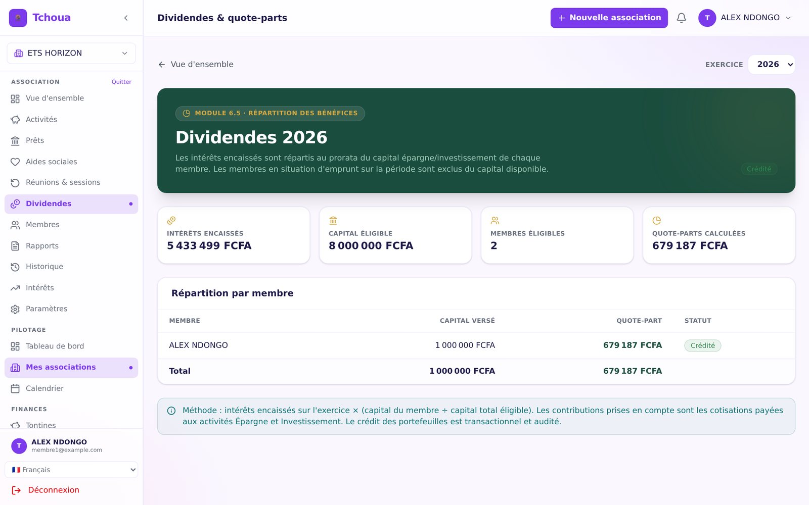
dividende membre = parts du membre × dividende par part
11.4 Le cas HORIZON
| Élément | Valeur |
|---|---|
| Exercice | 2026 |
| Base de répartition | 5 433 499 FCFA |
| Parts | 7 |
| Montant par part | 776 214,14 FCFA |
| Statut | Validé / publié |
| Traçabilité | Run annuel, quote-part par membre, export |
11.5 Exports et pièces
- PDF — rapport de gestion, bilan, liste des mouvements, attestation de solde.
- CSV — journal détaillé pour tableur ou expert-comptable.
- Documents — statuts, règlement, PV, rapports des commissaires, justificatifs.
- Archivage — chaque export est horodaté et rattaché à l'association.
11.6 Audit et contrôle interne
| Contrôle | Objectif | Fréquence |
|---|---|---|
| Rapprochement caisse / banque | Détecter les écarts | Mensuelle |
| Revue des impayés | Relancer et provisionner | Mensuelle |
| Contrôle des prêts | Vérifier garanties et échéances | Trimestrielle |
| Rapport des commissaires | Certifier les comptes | Trimestrielle et annuelle |
| Inventaire des documents | Complétude des archives | Annuelle |
| Audit système | Traçabilité des actions sensibles | Continue |
Un rapport exporté ne remplace pas une comptabilité légale. Pour les associations soumises à des obligations comptables, les exports doivent être remis à un expert-comptable et rapprochés des journaux officiels.
11.7 Indicateurs de pilotage
Ces indicateurs sont calculés à partir des mouvements réels, jamais saisis manuellement. Ils sont disponibles dans les rapports et dans le tableau de bord du bureau.
Historique et analyses
Chaque membre doit pouvoir répondre à trois questions : qu'ai-je versé, qu'ai-je reçu, que me reste-t-il ? Le module historique y répond au niveau du membre, de l'activité et de l'association.
12.1 Trois périmètres
| Périmètre | Contenu | Usage |
|---|---|---|
| Global association | Tous les mouvements de toutes les activités | Pilotage, transparence, commissaires |
| Par membre | Cotisations, prêts, remboursements, aides, parts d'intérêts | Fiche membre, attestation, réclamation |
| Par activité | Mouvements de la tontine, du fonds ou de la caisse | Suivi du cycle, rapports |
12.2 Les quatre vues
L'écran d'historique reprend les modes d'affichage des ERP modernes : liste, kanban, graphique et grille. L'utilisateur filtre par type, membre, activité, période et texte, puis regroupe par membre, activité, type ou mois.
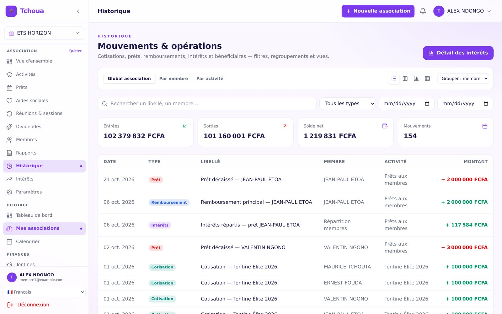
| Vue | Ce qu'elle montre | Quand l'utiliser |
|---|---|---|
| Liste | Mouvements ligne par ligne, montant signé | Contrôle, recherche, export |
| Kanban | Cartes regroupées par membre, activité, type ou mois | Lecture rapide, répartition |
| Graphique | Barres entrées / sorties par groupe | Comparaison, tendance |
| Grille | Tableau croisé groupes × types, net | Analyse, rapport |
12.3 Les types de mouvements
| Type | Sens | Source |
|---|---|---|
| Cotisation | Entrée | Session / activité |
| Prêt décaissé | Sortie | Demande approuvée |
| Remboursement principal | Entrée | Échéance de prêt |
| Intérêts | Entrée | Remboursement, réparti au prorata |
| Bénéficiaire | Sortie | Session de tontine |
| Aide sociale | Sortie | Demande approuvée et payée |
12.4 Chiffres de référence
Sur HORIZON, l'historique global restitue 144 mouvements : 101 579 832 FCFA d'entrées (8 000 000 de capital, 88 360 001 de principal remboursé, 5 219 831 d'intérêts) et 100 360 001 FCFA de sorties (prêts décaissés), soit un solde net de 1 219 831 FCFA. Ces chiffres sont calculés à partir des mouvements, pas saisis.
intérêts = Σ intérêts des remboursements
part membre = Σ (intérêt × quote-part de capital)
12.5 Détail des intérêts
Le bureau peut ouvrir chaque ligne pour voir la composition : intérêt total du remboursement, capital du membre à la date du prêt, capital global, quote-part et montant attribué. C'est la preuve de la répartition, pas seulement son résultat.
12.6 Pagination, filtres et export
- Pagination serveur (25 lignes par défaut, jusqu'à 100).
- Filtres combinables : type, membre, activité, date de début, date de fin, recherche texte.
- Regroupement dynamique : membre, activité, type, mois.
- Totaux recalculés sur l'ensemble filtré, pas seulement sur la page.
- Export CSV/PDF pour les rapports et les commissaires.
12.7 Transparence et vie privée
L'historique global de l'association est consultable par les membres, conformément à la promesse de transparence. En revanche, les données personnelles, les pièces médicales et les coordonnées ne sont pas exposées. Un membre simple voit ses propres opérations en détail ; le bureau voit tout ce qui relève de sa gestion.
La visibilité est calculée à chaque requête : elle dépend du rôle effectif dans l'association, pas d'un paramètre d'affichage. Un membre qui change de rôle voit immédiatement son périmètre évoluer.
Espace membre, thèmes et mobile
L'espace membre est conçu comme un poste de pilotage personnel : il montre ce qui compte, permet d'agir en deux clics et s'adapte à la langue et au thème choisis.
13.1 Structure de l'espace
| Zone | Contenu |
|---|---|
| Barre supérieure | Fil d'Ariane, notifications, menu utilisateur, sélecteur d'association |
| Navigation latérale | Pilotage, finances, communauté, analyse, compte ; menu contextuel de l'association |
| Launchpad | 12 modules en accès direct + actions rapides |
| Contenu | Tableau de bord, activités, historique, rapports, paramètres |
| Pied de page | Version, aide, contact, statut |
13.2 Les six thèmes
Chaque membre choisit son thème dans Paramètres → Apparence & langue. Le thème est appliqué immédiatement et enregistré sur le compte. Les six thèmes couvrent les goûts et les contextes d'usage, du plus sobre au plus contrasté.
| Thème | Ambiance | Usage |
|---|---|---|
| Forêt | Vert profond, crème, or | Thème historique, institutionnel |
| Minuit | Bleu nuit, cyan | Travail de nuit, contraste |
| Aurore | Lavande, violet, blanc | Doux, moderne |
| Océan | Bleu-vert, sable | Équilibre, lisibilité |
| Sable | Beige, brun, terracotta | Chaleureux, traditionnel |
| Néon | Noir, magenta, vert acide | Contraste maximal, démonstration |
13.3 Navigation et launchpad
Le launchpad regroupe les modules par usage et propose trois actions rapides : cotiser, demander un prêt, créer une association. Sur mobile, il devient une grille de cartes tactiles ; sur desktop, une grille de cartes avec icônes et sous-titres.
13.4 Mobile
L'application est utilisable sur téléphone : navigation compacte, cartes empilées, actions accessibles au pouce, tableaux défilants. Les écrans clés (tableau de bord, tontines, prêts, historique) sont testés en 390 × 844.
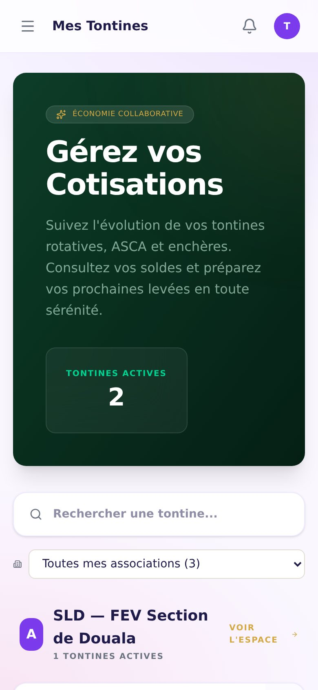
13.5 Langue et accessibilité
Le sélecteur de langue est disponible dans le menu utilisateur et dans les paramètres. Les pages publiques acceptent ?lang=fr|en|es|de. Les libellés, les dates et les montants suivent la locale ; les devises sont formatées avec séparateurs et symbole.
- Contraste vérifié sur les six thèmes, y compris les boutons primaires.
- Tailles de police lisibles sur mobile et à l'impression.
- Navigation au clavier sur les formulaires et les boutons.
- Messages d'erreur explicites, jamais de code technique seul.
13.6 Notifications
Le membre reçoit des notifications pour les échéances de cotisation, les sessions à venir, les décisions sur ses demandes, les remboursements et les publications du bureau. Les canaux (in-app, e-mail, WhatsApp, SMS) sont configurés par la plateforme et par l'association.
L'espace membre ne doit jamais obliger à deviner : chaque montant affiché renvoie à un mouvement, chaque mouvement renvoie à une session, chaque session renvoie à une activité.
13.7 Accompagnement et inclusion numérique
Tous les membres n'ont pas le même niveau d'aisance numérique. L'espace membre propose des libellés explicites, des états vides pédagogiques et des actions guidées. Les bureaux peuvent organiser des séances de prise en main et utiliser les captures de ce manuel comme support de formation.
- Prise en main en moins de dix minutes pour un membre qui sait utiliser WhatsApp.
- Les actions critiques demandent une confirmation et affichent un récapitulatif.
- Les erreurs sont expliquées en langage courant, avec la correction attendue.
- Les données restent consultables même lorsque l'association est suspendue.
- Un membre peut demander de l'aide à son bureau sans quitter l'application.
Administration et modèles
La console système pilote la plateforme, pas les associations. Elle gère les modèles réutilisables, les utilisateurs système, les rôles, les paramètres globaux et la maintenance.
14.1 Tableau de bord système
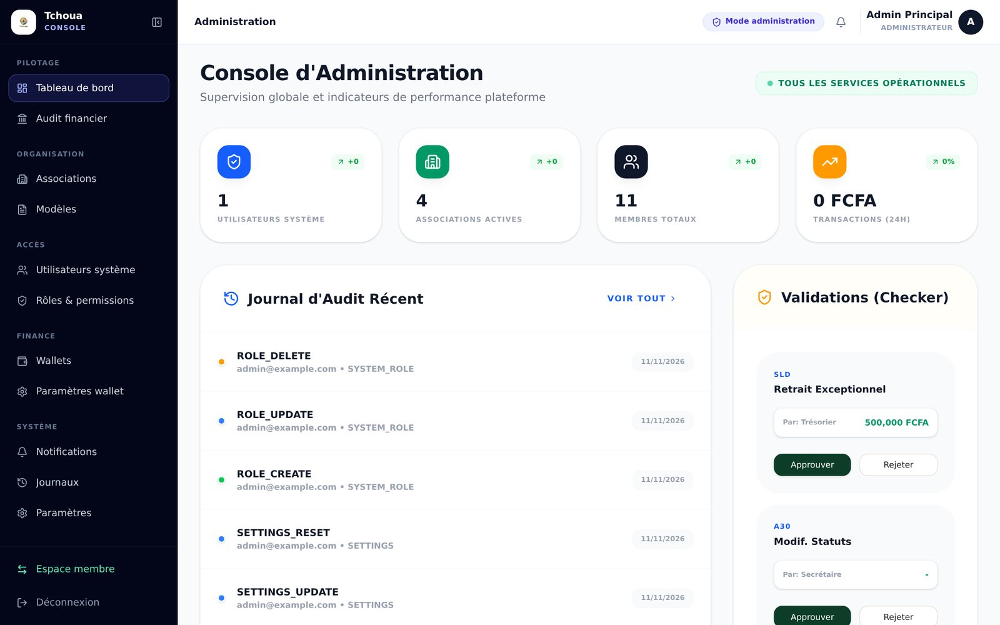
Le tableau de bord affiche le nombre d'associations, d'utilisateurs, de modèles et de wallets, les dernières actions d'audit et les demandes en attente. Il permet de diagnostiquer rapidement l'état de la plateforme.
14.2 Modèles d'association
Un modèle contient un nom, une catégorie, une description, un règlement type et une liste d'activités préconfigurées. Il sert de point de départ à la création d'une association ; le créateur peut ensuite ajuster chaque paramètre.
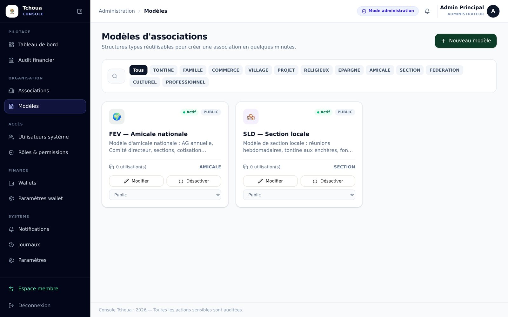
| Modèle | Catégorie | Activités types |
|---|---|---|
| FEV — Fédération nationale | AMICALE | Adhésion, cotisation annuelle, fonds national, aide maladie, aide décès |
| SLD — Section locale | SECTION | Tontine aux enchères, solidarité, investissement, collation, trois caisses d'aides |
| Tontine de quartier | TONTINE | Tontine rotative, collation |
| Caisse de prêts | ÉPARGNE | Fonds d'investissement, prêts, solidarité |
| Association villageoise | VILLAGE | Cotisation, projets, solidarité, réunions |
14.3 Utilisateurs et rôles système
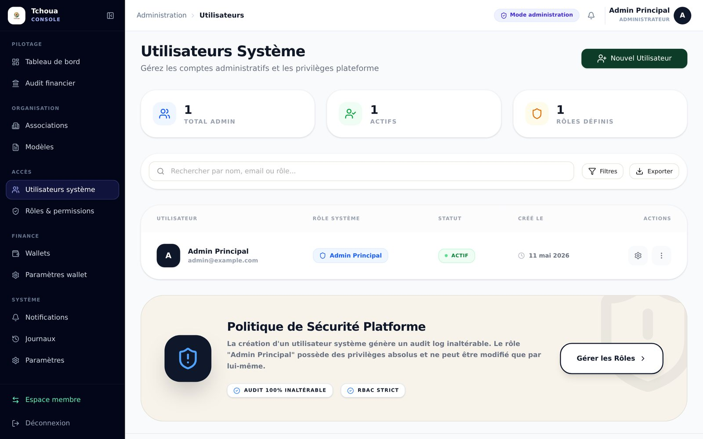
L'administrateur crée les comptes, attribue un rôle système, réinitialise un mot de passe ou désactive un compte. Les rôles système combinent des permissions par ressource et par action (CREATE, READ, UPDATE, DELETE). Le rôle « Admin Principal » contourne les restrictions ; les autres rôles sont limités à leurs permissions.
14.4 Associations supervisées
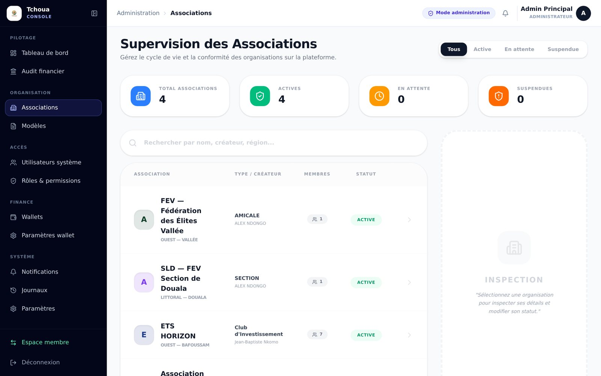
La console permet de suspendre une association, de la réactiver, de changer son statut ou de consulter ses données. Ces actions sont journalisées et ne modifient pas les écritures métier.
14.5 Paramètres de la plateforme
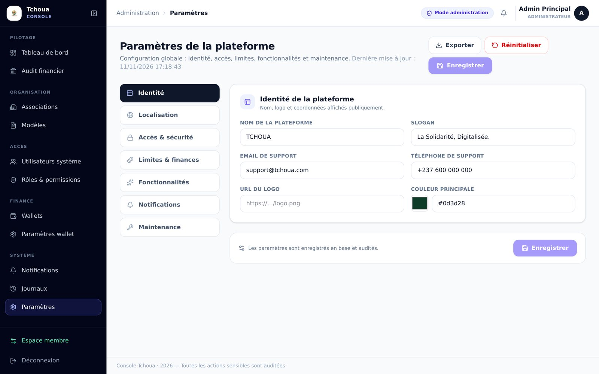
Les paramètres globaux définissent l'identité de la plateforme, la devise par défaut, les limites (nombre d'associations, membres, activités), les fonctionnalités activées, le mode maintenance et l'ouverture des inscriptions. Ils sont enregistrés en base et appliqués immédiatement.
14.6 Journal d'audit
| Action | Acteur | Données |
|---|---|---|
| Création / modification d'association | Administrateur ou créateur | Avant / après, date, IP |
| Changement de rôle | Administrateur | Rôle précédent, nouveau rôle |
| Réinitialisation de mot de passe | Administrateur | Compte cible, date |
| Modification des paramètres | Administrateur | Clé, ancienne valeur, nouvelle valeur |
| Suspension / réactivation | Administrateur | Motif, date |
14.7 Maintenance et sauvegardes
- Sauvegarde quotidienne de la base PostgreSQL.
- Export des documents et des rapports critiques.
- Surveillance du processus et des certificats TLS.
- Migrations idempotentes avant chaque déploiement.
- Journal des déploiements et des builds.
- Procédure de retour arrière par commit.
La console système ne doit pas être utilisée pour corriger des opérations métier. Une correction de cotisation, de prêt ou d'aide se fait dans l'association, avec un mouvement traçable et l'accord du bureau.
Multilingue et internationalisation
Tchoua vise l'Afrique francophone, anglophone et au-delà. L'interface, les contenus, les devises et les règles doivent pouvoir changer de pays sans réécrire l'application.
15.1 Langues
| Langue | Code | Couverture |
|---|---|---|
| Français | fr | Interface complète, site public, documents |
| Anglais | en | Site public, interface membre (déploiement progressif) |
| Espagnol | es | Site public |
| Allemand | de | Site public |
| Langues locales | — | Extensions prévues (douala, bassa, ewondo, etc.) |
Le sélecteur de langue est disponible dans le menu utilisateur, les paramètres et le site public. Les traductions sont centralisées dans des fichiers de locale ; aucun texte ne doit être codé en dur dans les composants.
15.2 Devises et formats
Les montants sont stockés en valeur numérique et affichés selon la devise de l'association. Le formatage respecte les séparateurs, le symbole et le nombre de décimales. Les taux de conversion et les devises multiples sont prévus pour les fédérations internationales.
| Devise | Code | Usage |
|---|---|---|
| Franc CFA (CEMAC) | XAF | Cameroun, Gabon, Congo, Tchad, RCA, Guinée équatoriale |
| Franc CFA (UEMOA) | XOF | Sénégal, Côte d'Ivoire, Bénin, Togo, Mali, Burkina, Niger |
| Naira | NGN | Nigeria |
| Cedi | GHS | Ghana |
| Euro / Dollar | EUR / USD | Diaspora, partenaires |
15.3 Adaptation juridique
Chaque pays a son droit des associations : au Cameroun, la loi n° 90/053 du 19 décembre 1990 ; dans l'espace OHADA, des règles comptables communes ; ailleurs, des régimes spécifiques. Tchoua ne prétend pas remplacer un juriste : la plateforme fournit des modèles et des paramètres, l'association valide ses statuts avec ses conseils.
- Modèles de statuts et de règlements par pays (à enrichir).
- Obligations déclaratives et registres légaux.
- Tenue des assemblées, quorums et archives.
- Protection des données personnelles.
15.4 Paiements et mobile money
Les moyens de paiement sont paramétrables par association : espèces, MTN MoMo, Orange Money, Wave, virement, nature, temps. Les intégrations de paiement doivent être conformes aux opérateurs et aux régulateurs locaux ; la plateforme prépare les points d'entrée et la reconciliation.
| Moyen | Usage | Statut |
|---|---|---|
| Espèces | Réunions, zones rurales | Opérationnel |
| MTN MoMo | Cameroun, Ghana, Ouganda… | Paramétrable, intégration à finaliser |
| Orange Money | Afrique francophone | Paramétrable, intégration à finaliser |
| Wave | Sénégal, Côte d'Ivoire | Prévu |
| Virement bancaire | Associations formalisées | Opérationnel (saisie + rapprochement) |
| Nature / temps | Coopératives, banques de temps | Opérationnel (valorisation) |
15.5 Feuille de route internationale
- Stabiliser le français et l'anglais sur l'interface complète.
- Ajouter les devises et les formats locaux.
- Intégrer les opérateurs mobile money pays par pays.
- Constituer la bibliothèque juridique par pays.
- Mode hors ligne et synchronisation pour les zones à faible connectivité.
- USSD et SMS pour les membres sans smartphone.
Le site public est déjà disponible en français, anglais, espagnol et allemand. L'interface membre suit le même socle de traduction ; les écrans métier sont traduits progressivement.
Cas réels : HORIZON, FEV, SLD
Trois associations, trois modèles différents, une même plateforme. HORIZON illustre l'investissement et le prêt ; FEV l'amicale nationale fédératrice ; SLD la section locale avec tontine aux enchères.
16.1 ETS HORIZON — investissement et prêts
HORIZON est une association de sept membres qui gère un capital, des prêts et des dividendes. Les données historiques ont été importées et vérifiées : 49 prêts, 5 actifs, 44 remboursés, 5 433 499 FCFA de dividendes 2026.
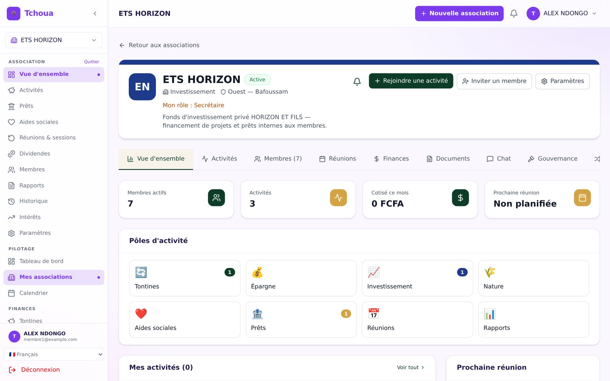
| Poste | Montant / nombre |
|---|---|
| Membres | 7 |
| Capital / apports | 8 000 000 FCFA |
| Prêts décaissés | 49 — 100 360 001 FCFA |
| Prêts en cours | 5 — 12 000 000 FCFA |
| Principal remboursé | 88 360 001 FCFA |
| Intérêts | 5 219 831 FCFA |
| Dividendes 2026 | 5 433 499 FCFA |
| Ratio prêts / fonds | 150 % (paramétrable) |
16.2 FEV — amicale nationale
FEV (Fédération des Élites de la Vallée) est une amicale d'élites régie par la loi de 1990. Elle fédère des sections, tient une AG annuelle, un comité directeur semestriel, un bureau exécutif et des commissions. Ses ressources proviennent des droits d'adhésion (10 000 FCFA), des cotisations annuelles (15 000 FCFA), des placements et des amendes.
| Paramètre | Valeur configurée |
|---|---|
| Type | AMICALE |
| AG | Annuelle, janvier–février, convocation 45 jours, quorum 1/2 |
| Comité directeur | Semestriel, décisions 2/3, quorum 2/3 |
| Bureau | 3 ans renouvelable une fois, fonctions gratuites |
| Droit d'adhésion | 10 000 FCFA |
| Cotisation annuelle | 15 000 FCFA |
| Fonds national | 10 000 FCFA par membre ; 300 000 au décès |
| Aide maladie | 10 000 FCFA/jour, 3 à 15 jours |
| Sections | Minimum 10 membres ; délégués 10 % (plafond 11) |
16.3 SLD — section de Douala
SLD (Section Locale de Douala) est la section FEV de Douala. Elle applique les statuts nationaux et son propre règlement 2024 : réunions le premier samedi après le 5, quorum 3/5, tontine aux enchères de 25 000 FCFA, fonds de solidarité de 72 000 FCFA/an, fonds d'investissement de 5 000 FCFA/mois, collation de 3 000 FCFA et aides familiales.
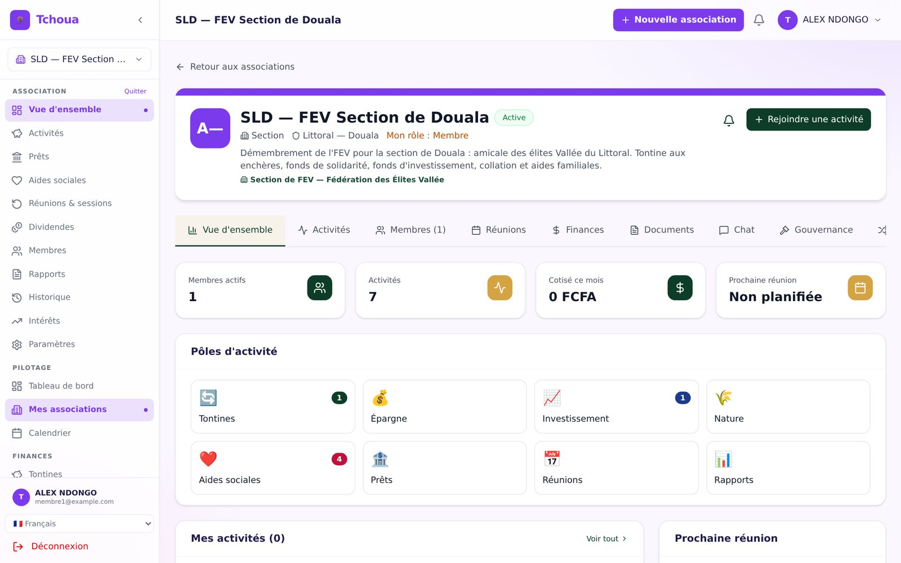
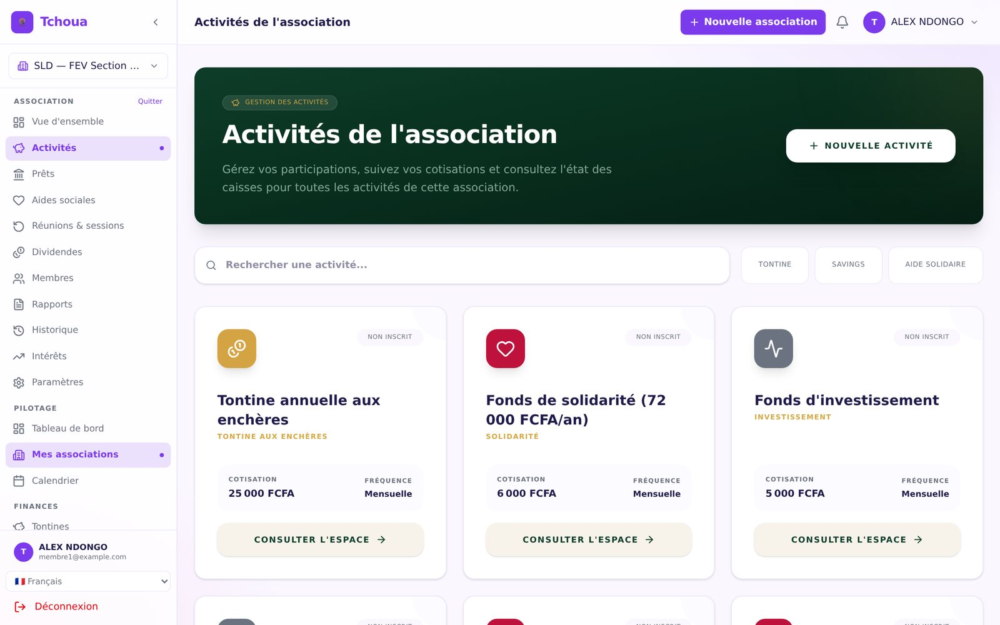
| Activité | Montant | Fréquence / règle |
|---|---|---|
| Tontine annuelle aux enchères | 25 000 FCFA / part | Mensuelle, 12 sessions, mise à prix 5 % |
| Fonds de solidarité | 6 000 FCFA/mois | 72 000 FCFA/an |
| Fonds d'investissement | 5 000 FCFA/mois | Prêt 3 %/mois, 2 mois, plafond 2× |
| Collation | 3 000 FCFA/séance | Forfait 150 000 FCFA |
| Aide maladie | 70 000 / 50 000 | Membre / conjoint |
| Aides familiales | 50 000 / 20 000 | Mariage / naissance |
| Aides décès | 900 000 / 405 000 | Membre / conjoint |
16.4 Comparaison
| Dimension | HORIZON | FEV | SLD |
|---|---|---|---|
| Nature | Investissement / prêts | Amicale nationale | Section locale |
| Niveau | Association primaire | Fédération | Section |
| Membres | 7 | National | Section Douala |
| Cotisation principale | Apports en capital | 15 000/an | 25 000 tontine + 6 000 solidarité + 5 000 FI |
| Activité phare | Prêts avec intérêts | Fonds national et aides | Tontine aux enchères |
| Rapports | Dividendes 2026 | AG, comité, commissions | CDS, collation, sanctions |
Le même moteur sert trois modèles radicalement différents. C'est la preuve de la généralisation : les objets (association, membre, activité, session, mouvement) sont communs ; les règles sont des paramètres.
Workflows de bout en bout
Ce chapitre enchaîne les écrans et les règles pour les parcours les plus fréquents. Chaque étape indique l'acteur, l'action, le contrôle et la trace produite.
17.1 Créer une association et son bureau
| # | Acteur | Action | Contrôle / trace |
|---|---|---|---|
| 1 | Créateur | Choisit le modèle, le type, le nom, la région, la couleur | Nom unique, type valide |
| 2 | Créateur | Rattache éventuellement à une association parente | Pas de cycle hiérarchique |
| 3 | Créateur | Paramètre adhésion, réunions, aides, sanctions | Valeurs cohérentes |
| 4 | Créateur | Désigne le bureau et les rôles | Un président, un trésorier |
| 5 | Système | Génère le code d'invitation et active l'association | Événement de cycle de vie |
17.2 Faire adhérer un membre
- Le candidat crée son compte ou reçoit une invitation.
- Il rejoint l'association par code, lien ou demande.
- Le bureau vérifie les conditions, le parrainage et les pièces.
- L'adhésion est validée : rôle, matricule, date d'entrée.
- Le membre apparaît dans l'annuaire, les appels de cotisation et les rapports.
Une adhésion refusée est conservée avec son motif. Une radiation ne supprime pas l'historique : elle change le statut et clôt les droits.
17.3 Ouvrir une session et encaisser les cotisations
| # | Action | Résultat |
|---|---|---|
| 1 | Créer la session (date, type, lieu, ordre du jour) | Session planifiée |
| 2 | Ouvrir la session | Cotisations attendues générées |
| 3 | Saisir les présences | Statuts et amendes |
| 4 | Encaisser les cotisations | Statuts PAYÉ / PARTIEL / LATE |
| 5 | Encaisser la collation | Caisse collation alimentée |
| 6 | Clôturer la session | Pot figé, PV, rapport |
17.4 Distribuer une tontine
- Vérifier le pot et les parts distribuables.
- Appliquer la règle d'attribution (rotation, tirage, enchères).
- Désigner le ou les bénéficiaires et le nombre de parts.
- Calculer le montant : parts × montant par part.
- Valider la distribution ; le solde de la session est mis à jour.
- Le bénéficiaire reçoit son montant ; l'historique l'enregistre.
solde session = cotisations − distributions
solde cycle = Σ soldes de session
17.5 Accorder et suivre un prêt
| # | Acteur | Action | Contrôle |
|---|---|---|---|
| 1 | Membre | Demande montant, motif, durée, garanties | Plafond, prêts actifs |
| 2 | Bureau | Instruction, vérification de la caisse | Ratio, capacité, garanties |
| 3 | Bureau / AG | Approbation ou refus motivé | Quorum, majorité |
| 4 | Trésorier | Décaissement | Double validation |
| 5 | Membre | Remboursements principal + intérêts | Échéancier, reçu |
| 6 | Système | Répartition des intérêts | Capital à la date du prêt |
17.6 Attribuer une aide sociale
- Le membre crée la demande avec catégorie et pièces.
- Le bureau contrôle l'éligibilité et le plafond.
- La décision est notifiée (accord, refus, complément).
- Le décaissement est enregistré avec référence.
- L'aide apparaît dans l'historique, le rapport et le solde du fonds.
17.7 Clôturer un exercice
| Étape | Contenu | Responsable |
|---|---|---|
| Inventaire | Caisses, banques, prêts, aides, cotisations | Trésorier |
| Rapprochement | Écarts et corrections motivées | Trésorier + commissaires |
| Bilan | Compte de résultat, situation | Bureau |
| Dividendes | Clé de répartition, run annuel | AG |
| Rapport | Rapport d'activités et rapport financier | Président / trésorier |
| Archivage | PV, rapports, exports | Secrétaire |
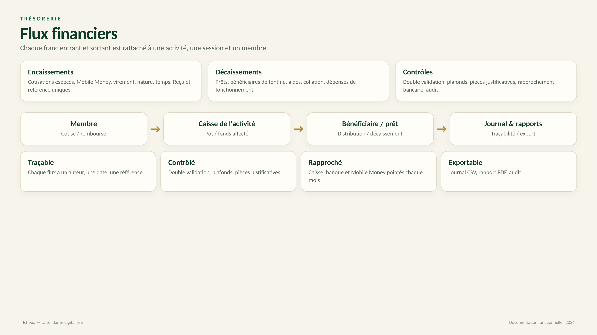
17.8 Matrice RACI
| Activité | Membre | Bureau | Trésorier | Commissaires | Admin |
|---|---|---|---|---|---|
| Cotiser | R | A | R | I | — |
| Valider une adhésion | I | A/R | I | — | — |
| Décaisser un prêt | I | A | R | I | — |
| Attribuer une aide | R | A | R | I | — |
| Clôturer un cycle | I | A/R | R | C | — |
| Paramétrer la plateforme | — | I | — | — | A/R |
R = responsable de l'exécution, A = autorité de validation, C = consulté, I = informé.
17.9 Gestion des exceptions
- Session annulée — les cotisations restent, la distribution est annulée par mouvement inverse.
- Erreur de saisie — correction par ajustement, jamais par suppression.
- Membre sortant — calcul du solde, remboursement ou compensation, statut LEFT.
- Litige — saisine du bureau, décision motivée, recours possible devant l'AG.
- Perte de connexion — les écritures validées restent ; la saisie reprend après reconnexion.
- Indisponibilité — les membres consultent, le bureau est informé ; reprise après redémarrage.
Roadmap, limites et support
Un document honnête dit aussi ce qui n'est pas encore fait. Ce chapitre présente la trajectoire produit, les limites actuelles et les modalités de support.
18.1 Ce qui est opérationnel
- Site public multilingue et accès membre.
- Création et gestion d'associations, sections et fédérations.
- Adhésion, rôles, annuaire, documents, règlements.
- Tontines : parts, fractions, cycles, pot, bénéficiaires, soldes.
- Cotisations, sessions, présences, amendes, collation.
- Prêts, remboursements, intérêts, dividendes.
- Solidarité et catalogue d'aides.
- Historique, rapports, exports PDF/CSV, audit.
- Thèmes, langue, mobile, launchpad.
- Console système, modèles, rôles, paramètres.
18.2 Limites actuelles
| Domaine | Limite | Contournement / prochaine étape |
|---|---|---|
| Désignation automatique des bénéficiaires | Le calcul et le paramétrage sont prêts ; l'attribution automatique selon éligibilité et enchères reste un workflow à finaliser | Désignation manuelle tracée en attendant |
| Consolidation fédérale | Hiérarchie et sections opérationnelles ; tableau de bord national agrégé à venir | Rapports par section |
| Comptabilité OHADA | Exports et rapports de gestion ; plan comptable complet non intégré | Export CSV vers expert-comptable |
| Mobile Money | Moyens de paiement paramétrables ; intégration opérateur à finaliser | Saisie manuelle avec référence |
| Hors ligne / USSD / SMS | Non disponibles | Application web responsive |
| Distinctions honorifiques | EPI — distinction honorifique décrite dans les textes, non modélisée | Module à ajouter |
| Multi-pays | Devise et langue paramétrables ; bibliothèque juridique par pays à enrichir | Modèles par pays |
| Signature électronique | Non intégrée | PV signés et téléversés |
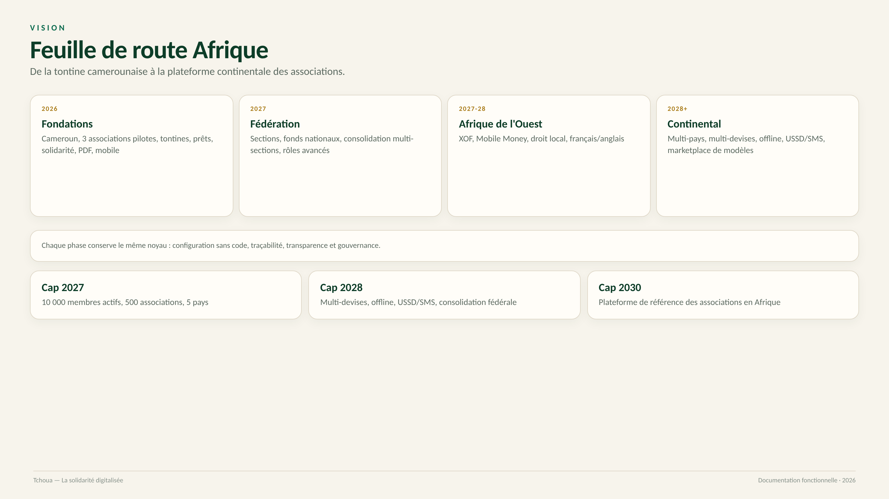
18.3 Sécurité et conformité
La plateforme applique les principes de moindre privilège, de traçabilité et de séparation des pouvoirs. Les données personnelles sont limitées au nécessaire ; les pièces médicales et les coordonnées ne sont pas exposées aux autres membres. Les sauvegardes et les journaux permettent de reconstituer les opérations.
Aucun système ne remplace la vigilance humaine : le bureau doit contrôler les rapports, les commissaires doivent auditionner les comptes, et les membres doivent vérifier leurs propres mouvements.
18.4 Support et maintenance
| Niveau | Canal | Délai cible |
|---|---|---|
| Incident bloquant | Support prioritaire | 4 heures ouvrées |
| Anomalie fonctionnelle | Support standard | 2 jours ouvrés |
| Demande d'évolution | Comité produit | Revue mensuelle |
| Formation | Session dédiée | Sur planning |
| Documentation | Ce manuel + guides | Mise à jour trimestrielle |
18.5 Gouvernance du document
Ce manuel est la référence fonctionnelle. Toute évolution du produit doit être répercutée dans le chapitre concerné, avec mise à jour de la version et de la date. Les captures d'écran doivent être refaites lorsque l'interface change ; les schémas sont régénérables par script.
- Version 1.0 — novembre 2026 — état de la production.
- Revue trimestrielle : fonctions, chiffres, captures.
- Revue annuelle : architecture, sécurité, roadmap.
- Validation : produit, opérations, direction.
Tchoua n'est pas seulement un logiciel de tontine : c'est une manière de rendre la solidarité vérifiable, la gouvernance lisible et la confiance transmissible. La plateforme est prête à servir ; la documentation est là pour que chacun puisse s'en servir.
Glossaire, API et checklist
Les références utiles au quotidien : vocabulaire, endpoints, checklist de paramétrage et index des figures.
A. Glossaire
| Terme | Définition |
|---|---|
| Activité | Contrat collectif géré par l'association : tontine, épargne, prêt, solidarité, collation. |
| Adhésion | Lien entre un utilisateur et une association, avec rôle, statut et date d'entrée. |
| Bénéficiaire | Membre désigné pour recevoir une ou plusieurs parts lors d'une session. |
| Bureau | Organe exécutif de l'association : président, secrétaire, trésorier, etc. |
| Caisse | Enveloppe financière affectée à une activité ou à un fonds. |
| Cycle | Période complète d'une activité, de l'ouverture à la clôture. |
| Dividende | Part des bénéfices ou intérêts répartie entre les membres. |
| Fraction | Part de part : 1, 1/2 ou 1/4. |
| Membership | Enregistrement de l'appartenance d'un utilisateur à une association. |
| Part | Unité de participation à une tontine. |
| Pot | Somme disponible pour une session après cotisations et reports. |
| Quorum | Nombre minimal de présents pour délibérer valablement. |
| Session | Rencontre datée d'une activité. |
| Souscription | Engagement d'un membre sur un nombre de parts. |
| Solidarité | Fonds et aides non remboursables destinés aux membres. |
| Tontine ASCA | Tontine d'épargne et de crédit internes. |
| Tontine rotative | Tontine où chacun reçoit le pot à tour de rôle. |
| Template | Modèle réutilisable d'association avec activités et règlement. |
| Wallet | Portefeuille interne de la plateforme pour les flux financiers. |
B. Endpoints principaux
| Méthode | Endpoint | Rôle |
|---|---|---|
| GET | /api/associations | Liste des associations de l'utilisateur |
| POST | /api/associations | Créer une association |
| GET | /api/associations/{id} | Détail, membres, activités, documents |
| PATCH | /api/associations/{id} | Modifier les paramètres |
| GET | /api/associations/{id}/history | Historique paginé, filtres, regroupements |
| GET | /api/associations/{id}/interests | Intérêts par membre, remboursement, période |
| GET | /api/associations/{id}/activities/{actId}/cycle | Synthèse du cycle de tontine |
| POST | /api/associations/{id}/activities | Créer une activité |
| PATCH | /api/associations/{id}/activities/{actId} | Modifier une activité |
| GET | /api/associations/{id}/documents | Documents de l'association |
| POST | /api/associations/{id}/documents | Téléverser un document |
| GET | /api/admin/settings | Paramètres plateforme (admin) |
| GET | /api/admin/templates | Modèles d'association (admin) |
| GET | /api/me/aggregate | Synthèse personnelle multi-associations |
Tableau B.1 — Endpoints principaux. Tous vérifient la session et l'appartenance à l'association.
C. Checklist de paramétrage
| Étape | À vérifier | Fait |
|---|---|---|
| Identité | Nom, type, région, logo, couleur, description | ☐ |
| Rattachement | Association parente, niveau, code d'invitation | ☐ |
| Bureau | Président, secrétaire, trésorier, commissaires | ☐ |
| Adhésion | Conditions, parrainage, droit, cotisation | ☐ |
| Réunions | Jour, heure, lieu, quorum, convocation | ☐ |
| Aides | Catégories, plafonds, pièces, délais | ☐ |
| Sanctions | Barème, motifs, recours | ☐ |
| Activités | Type, part, fréquence, cycle, bénéficiaires | ☐ |
| Prêts | Taux, durée, plafond, garanties, approbation | ☐ |
| Caisses | Comptes bancaires, caisses, responsables | ☐ |
| Documents | Statuts, règlement, PV, rapports | ☐ |
| Tests | Adhésion, cotisation, prêt, aide, rapport | ☐ |
D. Index des figures
| Figure | Titre | Chapitre |
|---|---|---|
| 1.1 | Page d'accueil publique | 1 |
| 2.1 | Architecture de la plateforme | 2 |
| 2.2 | Modèle de données | 2 |
| 3.1 | Rôles et permissions | 3 |
| 3.2 | Paramètres et thèmes | 3 |
| 4.1 | Cycle de vie | 4 |
| 4.2 | Gouvernance FEV / SLD | 4 |
| 4.3 | Fiche FEV | 4 |
| 5.1 | Carte des modules | 5 |
| 5.2 | Tableau de bord membre | 5 |
| 6.1 | Moteur de tontine | 6 |
| 6.2 | Activité SLD | 6 |
| 6.3 | Cycle de tontine | 6 |
| 7.1 | Sessions | 7 |
| 8.1 | Cycle d'un prêt | 8 |
| 8.2 | Intérêts | 8 |
| 9.1 | Solidarité | 9 |
| 13.1 | Thèmes | 13 |
| 13.3–13.4 | Mobile | 13 |
| 17.1 | Flux financiers | 17 |
| 18.1 | Roadmap | 18 |
E. Références
- Statuts FEV révisés 2018 ; règlement intérieur du Comité directeur 2013 ; recueil des textes 2023.
- Règlement intérieur SLD 2024.
- Données ETS HORIZON (classeur d'import et règlement intérieur).
- Spécifications fonctionnelles du dépôt : tontine, association, wallet, épargne, marketplace, vote.